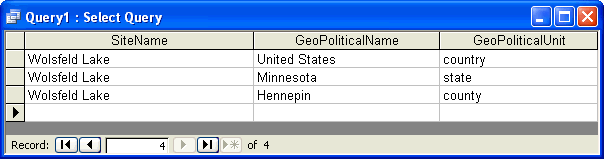

Neotoma
Paleoecology Database
Plio-Pleistocene to Holocene
Eric C. Grimm
DRAFT
11 May 2012

Scientific Papers E Series 1
Table of Contents
1.3 History of the Constituent Databases 7
1.3.1 Global Pollen Database 7
1.3.2 North American Plant Macrofossil Database 8
2. Basic Database Design Concepts 10
2.1 Sites, Collection Units, Analysis Units, Samples, and Datasets 10
2.4 Taxa and Ecological Groups 14
2.6 Sediment and Depositional Environments 20
3.2 Table: AggregateChronologies 23
3.3 Table: AggregateDatasets 24
3.4 Table: AggregateOrderTypes 25
3.5 Table: AggregateSampleAges 26
3.6 Table: AggregateSamples 27
3.9 Table: ChronControlTypes 29
3.11 Table: CollectionTypes 31
3.12 Table: CollectionUnits 32
3.15 Table: ContactStatuses 34
3.18 Table: DatasetPublications 36
3.20 Table: DatasetSubmissions 37
3.21 Table: DatasetSubmissionTypes 38
3.31 Table: GeochronPublications 45
3.33 Table: GeoPoliticalUnits 45
3.37 Table: PublicationAuthors 48
3.38 Table: PublicationEditors 49
3.40 Table: PublicationTypes 53
3.40.7 Doctoral Dissertation 61
3.40.10 Other Authored Publication 64
3.40.11 Other Edited Publication 64
3.41 Table: RelativeAgePublications 64
3.43 Table: RadiocarbonCalibration 65
3.44 Table: RelativeAgeScales 66
3.45 Table: RelativeAgeUnits 66
3.46 Table: RelativeChronology 66
3.47 Table: RepositoryInstitutions 67
3.48 Table: RepositorySpecimens 67
3.55 Table: SiteGeoPolitical 74
3.61 Table: Tephrachronology 85
3.64 Table: VariableContexts 88
3.65 Table: VariableElements 88
3.66 Table: VariableModifications 89
Introduction¶
Neotoma is a public database containing fossil data from the Holocene, Pleistocene, and Pliocene, or approximately the last 5.3 million years. The database stores associated physical data from fossil bearing deposits, for example sediment loss-on-ignition and geochemical data. The database also stores data from modern samples that are used to interpret fossil data.
The initial development of Neotoma is funded by a grant from the U.S. National Science Foundation Geoinformatics program. This grant is collaborative between University [1] and the Museum [2]. It has five Principle Investigators, Russell W. Graham ( ), Eric C. Grimm ( ), Stephen T. Jackson ( of ), Allan C. Ashworth ( ), and John W. (Jack) Williams (). The database is served from the Center for Environmental Informatics at .
Initially, data are being merged from four existing databases: the Global Pollen Database, FAUNMAP (a database of mammalian fauna), the North American Plant Macrofossil Database, and a fossil beetle database assembled by Allan Ashworth. The design of this database is such that many other kinds of fossil data can easily be incorporated in the future, for example, ostracodes, diatoms, chironmids, and freshwater mussels.
The existing databases were developed in the 1990’s and have not been updated structurally since. New data have been added, but the structures of these databases have not changed, despite significant advances in database and internet technology. Although structurally different, these databases contain similar kinds of data, and merging them was quite practical. The rationale for this merging was twofold: (1) to facilitate analyses of past biotic communities at the ecosystem level and (2) to reduce the overhead in maintaining and distributing several independent databases..
The new Neotoma database was initially designed by E. C. Grimm and implemented in Microsoft® Access®. This database will be ported to a higher end RDBMS for Internet distribution, but it will continue to be distributed as a standalone Access database for researchers who need access to the entire database.
Whence Neotoma¶
In the original NSF proposal, this database was called a “Late Neogene Terrestrial Ecosystem Database.” At the time this proposal was written, the Neogene Period included the Miocene, Pliocene, Pleistocene, and Holocene epochs. However, a proposal before the International Commission on Stratigraphy would elevate the Quaternary to a System or Period following the Neogene and terminate the Neogene at the end of Pliocene. Because this proposal renders the Neogene description of this database obsolete, a new name was sought. Numerous names and companion acronyms were considered, but none engendered enthusiastic support. B. Brandon Curry proposed the name Neotoma, and this name struck a fancy. Neotoma is the genus for the packrat. Packrats are prodigious collectors of anything in their territory, and moreover they are collectors of fossil data. They collect plant macrofossils and bones, and pollen is preserved in their amberat—hardened, dried urine, which impregnates their middens and preserves them for millennia.
Rationale¶
Paleobiological data from the recent geological past have been invaluable for understanding ecological dynamics at timescales inaccessible to direct observation, including ecosystem evolution, contemporary patterns of biodiversity, principles of ecosystem organization, particularly the individualistic response of species to environmental gradients, and the biotic response to climatic change, both gradual and abrupt. Understanding the dynamics of ecological systems requires ecological time series, but many ecological processes operate too slowly to be amenable to experimentation or direct observation. In addition to having ecological significance, fossil data have tremendous importance for climatology and global change research. Fossil floral and faunal data are crucial for climate-model verification and are essential for elucidating climate-vegetation interactions that may partly control climate.
Basic paleobiological research is site based, and paleobiologists have devoted innumerable hours to identifying, counting, and cataloging fossils from cores, sections, and excavations. These data are typically published in papers describing single sites or small numbers of sites. Often, the data are published graphically, as in a pollen diagram, and the actual data reside on the investigator’s computer or in a file cabinet. These basic data are similar to museum collections, costly to replace, sometimes irreplaceable, and their value does not diminish with time. Also similar to museum collections, the data require cataloging and curation. Whereas physical specimens of large fossils, such as animal bones, are typically accessioned into museums, microfossils, such as pollen, are not accessioned, and the digital data are the primary objects, and their loss is equivalent to losing valuable museum specimens. The integrated database that we propose ensures safe, long-term archiving of these data.
Large independent databases exist for fossil pollen, plant macrofossils, and mammals: the Global Pollen Database (GPD), the North American Plant Macrofossil Database (NAPMD), and FAUNMAP. In addition, a database of fossil beetles (BEETLE) has been assembled, but it is not yet publicly available. These databases have become essential cyberinfrastructure. Nevertheless, they were developed as standalone databases in the early 1990’s with PC database software. GPD and NAPMD are in Paradox®; FAUNMAP is in Access. Since initial database development, emphasis has been placed on ingest of new and legacy data. However, database and Internet technology have advanced greatly in the past 15 years, and the current relational database software, ingest programs, data retrieval algorithms, output formats, and analysis tools are outdated and minimal. Moreover, the databases are not linked, so that integrated analyses are difficult.
Although GPD, NAPMD, and FAUNMAP were developed independently, they have much in common. The basic data of all three databases as well as BEETLE are essentially lists of taxa from cores, excavations, or sections, often with quantitative measures of abundance. The three databases include similar metadata. The objective of Neotoma is to build a unified data structure that will incorporate all of these databases. The database will initially incorporate pollen, plant macrofossil, mammal, and beetle data. However, the database designed facilitates the incorporation of all kinds of fossil data.
Various teams of investigators have developed databases for paleobiological data that have been project or discipline based, including the four databases to be integrated in this project. However, long-term maintenance and sustainability have been problematic because of the need to secure continuous funding. Nevertheless, these databases have become the established archives for their disciplines and, new data are continuously contributed. However, because of funding hiatuses, long spells may intervene between times of data contribution and their public availability. For example, the plant macrofossil database has not incorporated any new data since 1999. The number of different databases and disciplines exacerbates the problem, because each database requires a database manager. Consolidation of informatics technology helps address this overhead issue. However, specialists are still essential for management and supervision of data collection and quality control for their disciplines or organismal groups.
The purposes of Neotoma are (1) to facilitate studies of ecosystem development and response to climate change, (2) to provide the historical context for understanding biodiversity dynamics, including genetic diversity, (3) to provide the data for climate-model validation, (4) to provide a safe, long-term, low-cost archive for a wide variety of paleobiological data. Site-based studies are invaluable in their own right, and they are the generators of new data. However, much is gained by marshalling data from geographic arrays of sites for synoptic, broad-scale ecosystem studies. In order to carry out such studies efficiently, a queryable database is required. Thus, it is much more than an archive; it is essential cyberinfrastructure for paleoenvironmental research. The database facilitates integration, synthesis, and understanding, and it promotes information sharing and collaboration. The individual databases have been extensively used for scientific research, with several hundred scientific publications directly based upon data drawn from these databases. This project will enhance those databases and will continue their public access. By integrating these databases and by simplifying the contributor interface, we can reduce the number of people necessary for community-wide database maintenance, and thereby help ensure their long-term sustainability and existence.
History of the Constituent Databases
Global Pollen Database
In an early effort, the Cooperative Holocene Mapping Project (COHMAP Members 1988, Wright et al. 1993) assembled pollen data in the 1970s and 1980s to test climate models. Although data-model comparison was the principal objective of the COHMAP project, the synoptic analyses of the pollen data, particularly maps showing the constantly shifting ranges of species in response to climate change, were revelatory and led to much ecological insight (e.g. Webb 1981, 1987, 1988).
The COHMAP pollen “database” consisted of a multiplicity of flat files with prescribed formats for data and chronologies. FORTRAN programs were written to read these files and to assemble data for particular analyses. Thompson Webb III managed the COHMAP pollen database at , but as the quantity of data increased, data management became increasingly cumbersome. Clearly, the data needed to be migrated to a relational database management system. Discussions with E. C. Grimm led to the initiation of the North American Pollen Database (NAPD) at the in 1990.
At the same time in , the International Geological Correlation Project IGCP 158 was conducting a major collaborative synthesis of paleoecological data, primarily of pollen, and the need for a pollen database became painfully obvious. In the forward to the book resulting from this project (Berglund et al. 1996), J.L. de Beaulieu describes the role that this project had in launching the European Pollen Database. A workshop to develop a European Pollen Database (EPD) was held in in 1989. North American representatives also attended, and the organizers of NAPD and EPD commenced a long-standing collaboration to develop compatible databases. NAPD and EPD held several joint workshops and developed the same data structure. Nevertheless, the two databases were independently established, partly because Internet capabilities were not yet sufficient to easily manage a merged database. The pollen databases were developed in Paradox, which at the time was the most powerful RDBMS readily available for the PC platform. NAPD and EPD established two important protocols: (1) the databases were relational and queryable and (2) they were publicly available. As the success the NAPD-EPD partnership escalated, working groups initiated pollen databases for other regions, including the Latin American Pollen Database (LAPD) in 1994, the Pollen Database for and the Russian Far East (PDSRFE) in 1995, and the African Pollen Database (APD) in 1996. At its initial organizational workshop, LAPD opted to merge with NAPD, rather than develop a standalone database, and the Global Pollen Database was born. PDSRFE also followed this model. APD developed independently, but uses the exact table structure of GPD and EPD. Pollen database projects have also been initiated in other regions, and the GPD contains some of these data, including the Indo-Pacific Pollen Database and the Japanese Pollen Database.
The pollen databases contain data from the Holocene, Pleistocene, and Pliocene, although most data are from the last 20,000 years. Included are fossil data, mainly from cores and sections, and modern surface samples, which are essential for calibrating fossil data. NAPD data are not separate from the GPD, but rather NAPD is the North American subset of GPD. EPD has both public and restricted data—a concession that had to be made early on to assuage some contributors.
North American Plant Macrofossil Database¶
Plant macrofossils include plant organs generally visible to the naked eye, including seeds, fruits, leaves, needles, wood, bud scales, and megaspores. Synoptic-scale mapping of plant macrofossils from modern assemblages (Jackson et al. 1997) and fossil assemblages (Jackson et al. 1997, Jackson et al. 2000, Jackson and Booth 2002) have shown the utility of plant macrofossils in providing spatially and taxonomically precise reconstructions of past species ranges. Although plant macrofossil records are spatially precise, synoptic networks of high-quality sites can scale up to yield aggregate views of past distributions (Jackson et al. 1997). In addition, macrofossils, with their greater taxonomic resolution, augment the pollen data by providing information on which species might have been present, and can resolve issues of long-distance transport (Birks 2003).
The North American Plant Macrofossil Database (NAPMD) has been directed by S.T. Jackson at the . Highest priority has been placed on data from the last 30,000 years, although some earlier Pleistocene and late Pliocene data are included. The database originated as a research database for selected taxa from Late Quaternary sediments of eastern North America (Jackson et al. 1997). In 1994, an effort was initiated with NOAA funding to build on this foundation to develop a cooperative, relational database comprising all of , a longer time span, and all plant taxa.
The structure of NAPMD was adapted from the pollen database and is also in Paradox. The principal modifications made to the pollen database structure to accommodate plant macrofossils were those to cope with different organs from the same species and to deal with the various quantitative measures of abundance. The database also includes surface samples, which are useful for interpretation of fossil data.
FAUNMAP¶
R.W. Graham, E.L. Lundelius, Jr., and a group of Regional Collaborators organized a project to develop a database for late Quaternary faunal data from the , which the U.S. NSF funded in 1990. This project had a research agenda, and its seminal paper focused on the individualistic behavior displayed by animal species (FAUNMAP Working Group 1996).
Two FAUNMAP databases exist, FAUNMAP I and FAUNMAP II. Both databases were coordinated by R. W. Graham and E. L. Lundelius, Jr. and funded by NSF. Both are relational databases for fossil mammal sites. The data were extracted from peer-reviewed literature, selected theses and dissertations, and selected contract reports for both paleontology and archaeology. Unpublished collections were not included. Data were originally captured in Paradox but were later migrated to Access.
FAUNMAP I contains data from sites in the lower 48 states that date between 500 BP and ~40,000 BP. Funding for this project ended in 1994, with the production of two major publications by the FAUNMAP Working Group (1994, 1996), as well as numerous other publications by individual members and by many others who accessed the database on-line. Graham and Lundelius continued the FAUNMAP project, developing FAUNMAP II with funding from NSF beginning in 1998. FAUNMAP II shares the same structure as FAUNMAP I but expands the spatial coverage to include and and extends the temporal coverage to the Pliocene (5 Ma). In addition, sites published since 1994, when FAUNMAP I was completed, have been added for the contiguous 48 states. In all, FAUNMAP I and II contain more than 5000 fossil-mammal sites with more than 600 mammal species for all of North America north of Mexico that range in age from 0.5 ka to 5 Ma.
The detailed structure of the FAUNMAP database is described in FAUNMAP Working Group (1994). Sites identified by name and location were subdivided into Analysis Units (AU’s), which varied from site to site depending upon the definitions used in the original publications (e.g., stratigraphic horizons, cultural horizons, excavation levels, biostratigraphic zones). All data (i.e. taxa identified and counts of individual specimens) and metadata (sediment types, depositional environments, facies, radiometric and other geochronological dates, modifications of bone) were captured by AU. This structure allows for the extraction of information at either the level of the site or the smallest subdivision (AU). The AU permits fine-scale temporal resolution and analysis. Similar to GPD and NAPMD, FAUNMAP contains archival and research tables. Similar to the plant macrofossil database, FAUNMAP contains a variety of quantitative measures of abundance, and presence data are more commonly used for analysis.
BEETLE¶
Many beetles have highly specific ecological and climatic requirements and are valuable indicators of past environments (Morgan et al. 1983, Ashworth 2001, 2004). They are one of the most diverse groups of organisms on earth, and of the insects, perhaps the most commonly preserved as fossils. Allan Ashworth has assembled a database of fossil beetles from . The data, which were recorded in Excel, contain 5523 individual records of 2567 taxa from 199 sites and 165 publications. Metadata include site name, latitude and longitude, lithology of sediment, absolute age, and geological age. The basic data are similar to plant and mammal databases—lists of taxa from sites. The metadata have not been recorded to the extent of the other databases, especially chronological data, but Ashworth has resolved the taxonomic issues and has assembled the publications, so that the additional metadata can be easily pulled together.
Who Will Use Neotoma?¶
The existing databases have been used widely for a variety of studies. Because the databases have been available on-line, precise determination of how many publications have made use of them is difficult. In addition, the databases are widely used for instructional purposes. Below are examples of the kinds of people who have used these databases and who we expect will find the new, integrated database even more useful.
- Paleoecologists seeking to place a new record into a regional/continental/global context (e.g., Bell and Mead 1998, Czaplewski et al. 1999, Bell and Barnosky 2000, Newby et al. 2000, Futyma and Miller 2001, Gavin et al. 2001, Czaplewski et al. 2002, Schauffler and Jacobson 2002, Camill et al. 2003, Rosenberg et al. 2003, Willard et al. 2003, Pasenko and Schubert 2004, and many others).
- Synoptic paleoecologists interested in mapping regional to sub-continental to global patterns of vegetation change (e.g., Jackson et al. 1997, Williams et al. 1998, Jackson et al. 2000, Prentice et al. 2000, Thompson and Anderson 2000, Williams et al. 2000, Williams et al. 2001, Williams 2003, Webb et al. 2004, Williams et al. 2004, Asselin and Payette 2005).
- Synoptic paleoclimatologists building benchmark paleoclimatic reconstructions for GCM evaluation (e.g., Bartlein et al. 1998, Farrera et al. 1999, Guiot et al. 1999, Kohfeld and Harrison 2000, CAPE Project Members 2001, Kageyama et al. 2001, Kaplan et al. 2003).
- Paleontologists trying to understand the timing, patterns, and causes of extinction events (e.g., Jackson and Weng 1999, Graham 2001, Barnosky et al. 2004, Martínez-Meyer et al. 2004, Wroe et al. 2004).
- Evolutionary biologists mapping the genetic legacies of Quaternary climatic variations (e.g., Petit et al. 1997, Fedorov 1999, Tremblay and Schoen 1999, Hewitt 2000, Comps et al. 2001, Good and Sullivan 2001, Petit et al. 2002, Kropf et al. 2003, Lessa et al. 2003, Petit et al. 2003, Hewitt 2004, Lascoux et al. 2004, Petit et al. 2004, Whorley et al. 2004, Runck and Cook 2005).
- Macroecologists interested in temporal records of species turnover and biodiversity and historical controls on modern patterns of floristic diversity (e.g., Silvertown 1985, Qian and Ricklefs 2000, Brown et al. 2001, Haskell 2001).
- Archeologists who are studying human subsistence patterns and interactions with their environment (e.g., Grayson 2001, Grayson and Meltzer 2002, Cannon and Meltzer 2004, Grayson in press).
- Natural resource managers who need to know historical ranges and abundances of plants and animals for designing conservation and management plans (e.g., Graham and Graham 1994, Cole et al. 1998, Noss et al. 2000, Owen et al. 2000, Committee on Ungulate Management in Yellowstone National Park 2002, Burns et al. 2003)
- Scientists trying to understand the potential response of plants, animals, biomes, ecosystems, and biodiversity to global warming (e.g., Bartlein et al. 1997, Davis et al. 2000, Barnosky et al. 2003, Burns et al. 2003, Kaplan et al. 2003, Schmitz et al. 2003, Jackson and Williams 2004, Martínez-Meyer et al. 2004)
- Teachers who use the databases for teaching purposes and class exercises.
Basic Database Design Concepts
Sites, Collection Units, Analysis Units, Samples, and Datasets
Fossil data are site based. A Site has a name, latitude-longitude coordinates, altitude, and areal extent. In Neotoma, Sites are designated geographically as boxes with north and south latitude coordinates and east and west longitude coordinates. If the areal extent is not known, the box collapses to a point, with the north and south latitudes equal and the east and west longitudes equal. Most of the legacy sites in Neotoma currently have point coordinates. The lat-long box can circumscribe the site, for example a lake, or it may circumscribe a larger area in which the site lies either because the exact location of the site is not known or because the exact location is purposely kept vague. In the case of many legacy sites, the exact location is not know precisely; for example, it may have been described as «on a gravel bar 5 miles east of town». The exact locations of some sites have purposely been kept vague to prevent looting and vandalism.
A Collection Unit is a unit from a site from which a collection of fossils or other data have been made. Typical Collection Units are cores, sections, and excavation units. A site may have several Collection Units. A Collection Unit is located spatially within a site and may have precise GPS latitude-longitude coordinates. Its definition is quite flexible. For pollen data, a Collection Unit is typically a core, a section, or surface sample. A Collection Unit can also be a composite core comprised of two or more adjacent cores pieced together to form a continuous stratigraphic sequence. A Collection Unit can also be an excavation unit. For faunal data, a Collection Unit could be as precise as an excavation square, or it could be a group of squares from a particular feature within a site. For example, consider a pit cave with three sediment cones, each with several excavation squares. Collection Units could be defined as the individual squares, or as three composite Collection Units, one from each sediment cone. Another example is an archaeological site, from which the reported Collection Units are different structures, although each structure may have had several excavation squares. The precision in the database depends on how data were entered or reported.
For many published sites, the data are reported from composite Collection Units. If faunal data are reported from a site or locality without explicit Collection Units, then data are assigned to a single Collection Unit with the name «Locality». This is a «quote».
Different kinds of data may have been collected from a single Collection Unit, for example fauna and macrobotanicals from an excavation, or pollen and plant macrofossils from a lake-sediment core. A composite Collection Unit may include data from different milieus, which, nevertheless, are associated with each other, for example a diatom sample from surficial lake sediments and an associated lake-water sample for water-chemistry measurements.
The Collection Unit is equivalent to the Entity in the Global Pollen Database but was not defined in FAUNMAP. When the FAUNMAP data were imported into Neotoma, most localities were assigned a single «Locality» Collection Unit. However, for some localities, the data were assigned to different Collection Units that were clearly identifiable in FAUNMAP (see Figure 1).
An Analysis Unit is a stratigraphic unit within a Collection Unit and is typically defined in the vertical dimension. An Analysis Unit may be a natural stratigraphic unit with perhaps irregular depth and thickness or it may be an arbitrary unit defined by absolute depth and thickness. An excavation may have been dug in arbitrary units, for example 10 cm levels, or it may have followed natural stratagraphic boundaries, for example the «red zone» or a feature in an archaeological site. Although Analysis Units could be designated by an upper depth and lower depth, in Neotoma they are designated by their midpoint depth and thickness, which is more convenient for developing age models. Pollen and other microfossils are typically sampled at arbitrary depths, and although these samples have thicknesses corresponding to the thickness of the sampling device (usually 1 cm or less), these thicknesses are often not reported, just the depths. Different kinds of samples may have been taken from a single analysis unit, for example pollen, diatoms, and ostracodes. The Analysis Unit links these various samples together.
In larger excavations, natural stratigraphic Analysis Units may cut across excavation squares or Collection Units, and the data are reported by Analysis Unit rather than by Collection Unit. In this case, the fossil data are assigned to a generic composite Collection Unit named «Locality», which has the explicitly defined Analysis Units. If the Analysis Units are not described or reported, then the data are assigned to a single Analysis Unit with the name «Assemblage». Thus, for a locality published with only faunal list, the fauna are assigned to a Collection Unit named «Locality» and to an Analysis Unit named «Assemblage».
In FAUNMAP, Analysis Units are the primary sample units, and fauna are recorded by Analysis Unit. In the GPD, Analysis Units correspond to samples.
Samples are of a single data type from an Analysis Unit. For example, there may be a vertebrate faunal sample and a macrobotanical sample from the same Analysis Unit; or there may be a pollen sample and an ostracode sample from the same Analysis Unit. There can be multiple samples of the same data type from an Analysis Unit, for example two pollen samples counted by different analysts. Normally, vertebrate fossils from an Analysis Unit comprise a single sample; however, if the fossils are of mixed age, individually dated bones may be treated as separate samples, each with a precise age. In addition to fossils, samples may also be used for physical measurements, such as loss-on-ignition. Geochronologic measurements, such as radiocarbon dates, are made on geochronologic samples.
A Dataset is a set of Samples of a single data type from a Collection Unit. For example the pollen data from a core comprise a pollen Dataset. The geochronologic samples from a Collection Unit form a geochronologic Dataset. Every Sample is assigned to a Dataset, and every Dataset is assigned to a Collection Unit. Samples from different Collection Units cannot be assigned to the same Dataset (although they may be assigned to Aggregate Datasets).

Figure 1. Diagram showing the relationships between tables in Neotoma, the Pollen Database, and FAUNMAP. Because the pollen database has only pollen, no need exists for Analysis Units, which may have multiple data types. FAUNMAP does not make a hierarchical distinction between Collection Units and Analysis Units, and the data for both Analysis Units and fauna are contained in the Faunal table, although within the Faunal table, implicit one-to-many relationships exist between Localities and Analysis Units and between Analysis Units and faunal data.
Taxa and Variables¶
In general, a sample in Neotoma has a list of taxa with some measure of abundances. The Data table in Neotoma has fields for SampleID, VariableID, and Value. Variables, which are listed in the Variables table, consist of a Taxon, referenced in the Taxa table, as well as the identified Element, measurement Units, Context, and Modification. A Taxon is generally a biological Taxon, but a Taxon may also be a physical attribute such as loss-on-ignition.
For biological taxa, the Element is the organ or skeletal element. Typical faunal Elements are bones, teeth, scales, and other hard body parts. Bone and tooth Elements may be specifically identified (e.g. «tibia» or even more precisely «tibia, distal, left», «M2, lower, left»). Some soft Elements also occur in the database (e.g. «hair» and «dung»). For mammals, an unspecified element is «bone/tooth». Elements for plant macrofossils are the organs identified (e.g. «seed», «needle», «cone bract»). Pollen and spores are treated simply as taxon Elements. Thus, Picea seeds, Picea needles, and Picea pollen are three different Variables. All three refer to a single entry in the Taxa table for Picea.
Variable Units are the measurement units. For faunal data, the most common are «present/absent», «number of individual specimens» (NISP), and «minimum number of individuals» (MNI). Plant macrofossils have many different quantitative and semi-quantitative measurement Units, including concentrations and relative abundance scales. Measurement Units for pollen are NISP (counts) and «percent». For pollen the preferred measurement Unit is NISP, but for some sites only percentage data are available. Picea pollen NISP and Picea pollen percent are two different Variables.
Variable Contexts for fauna include «articulated», «intrusive», and «redeposited». A context for pollen is «anachronic», which refers to a pollen type known to be too old for the contemporary sedimentary deposit. Most Variables do not have a specified context.
Variable Modifications include various modifications to fossils or modifiers to Variables, including human modifications to bones (e.g. «bone tool», «human butchering», «burned») and preservational and taphonomic modifications (e.g. «carnivore gnawed», «fragment»). Modifications for pollen include preservational classifications such as «corroded» and «degraded».
Taxonomy and Synonymy¶
Neotoma does not change or question identifications from original sources, although taxonomic names may be synonymized to currently accepted names. Thus, for example, the old (although still valid) non-standard plant family names such as Gramineae and Compositae are synonimized to their standard family names terminated with «-aceae», viz. Poaceae and Asteraceae. Neotoma has not attempted to establish complete or comprehensive synonymies. However, the Synonyms table lists commonly encountered synonyms. The descriptions of the SynonymTypes and Taxa tables contain fuller discussions of synonymiztions made in Neotoma.
An important feature of Neotoma is that the Taxa table is hierarchical. Each Taxon has a HigherTaxonID, which is the TaxonID of the next higher taxonomic rank. Thus, data are stored at the highest taxonomic resolution reported by the original investigators, but can be extracted at a higher taxonomic level.
Synonymy presents a challenge for any organismal database, particularly for one such as Neotoma, which archives data collected for over a century and which archives extinct taxa, often for which few and fragmentary specimens exist. Many changes are due to increased understanding of the diversity within taxonomic groups and of the phylogenetic relationships within and among groups. Other changes are due purely to taxonomic rules or conventions set by the International Code of Botanical Nomenclature (McNeill et al. 2006) and the International Code of Zoological Nomenclature (International Commission on Zoological Nomenclature 1999). Working groups representing the different taxonomic groups included in Neotoma have established appropriate taxonomic authorities:
- Plants – There is no worldwide authority. The International Plant
Names Index [3] lists validly published names, but a listed name is not necessarily the accepted name for a given taxon. For families, Neotoma follows the Angiosperm Phylogeny Group II (2003) and Stevens (2007+), which follows and updates APG II. The APG is an international consortium of plant taxonomists, and the APG classification utilizes the great quantity of phylogenetic data generated in recent years. For lower taxonomic ranks, the various pollen database cooperatives follow appropriate regional floras:
North American Pollen Database/North American Plant Macrofossil Database: Insofar as possible, follows the Flora of North America (Flora of North America Editorial Committee 1993+); about half of the planned FNA volumes have been published. Otherwise, appropriate regional floras are followed.
European Pollen Database: The EPD has a Taxonomy Support Group. In general, nomenclature follows Flora Europaea (Tutin 1964-1993).
African Pollen Database: The APD has a Committee for Nomenclature, which has produced a list of pollen types with misspellings, synonymy, and nomenclature corrected [4]. APD nomenclature follows Enumération des plantes à fleurs d’Afrique Tropicale (Lebrun and Stork 1991-1997).
Latin American Pollen Database: has a tremendously rich and diverse flora and no comprensive flora is available. Various regional floras are followed.
Indo-Pacific Pollen Database: For Australia and adjacent areas follows the Australian Plant Name Index (Chapman 1991). For other regions, appropriate regional floras are followed.
Pollen Database for Siberia and the Russian Far East Follows Vascular Plants of Russia and Adjacent States (Czerepanov 1995).
Mammals – For extant taxa, the authority is Wilson and Reeder’s (2005) Mammal Species of the World . Original sources are followed for extinct species, and the database is considered authoritative.
Birds – For North America, the authority is the American Ornithologists’ Union Check-list of North American Birds (American Ornithologists’ Union 1983).
Fish – Follows the Catalog of Fishes (Eschmeyer 1998).
Mollusks – For North America, follows Common and Scientific Names of Aquatic Invertebrates from the United States and Canada: Mollusks (Turgeon et al. 1998).
- Beetles – Comprehensive manuals do not exist. Original taxonomic
authorities are cited, and the database is considered authoritative.
Taxa and Ecological Groups
In the Taxa table, each taxon is assigned a TaxaGroupID, which refers to the TaxaGroupTypes table. These are major taxonomic groups, such as «Vascular plants», «Diatoms», «Testate amoebae», «Mammals», «Reptiles and amphibians», «Fish», and «Molluscs». Also included are «Charcoal» and «Physical variables». Ecological Groups are groupings of taxa within Taxa Groups, which may be ecological or taxonomic. Ecological Groups are assigned in the EcolGroups table, in which taxa are assigned an EcolGroupID, which links to the EcolGroupTypes table, and an EcolSetID, which links to the EcolSetTypes table. Ecological Groups are commonly used to organize taxa lists and diagrams. For any taxonomic group, more than one Ecological Set may be assigned. For example, beetles may be assigned to a set of ecological groups, such as dung and bark beetles, and to second set based on taxonomy. Vascular plants are assigned to a «Default plant» set comprised of groups such as «Trees and Shrubs», «Upland Herbs», and «Terrestrial Vascular Cryptogams». Default pollen diagrams can then be generated based on a pollen sum of these three groups. Mammals are assigned to a «Vertebrate orders» set.
Chronology¶
Neotoma stores both the archival data used to reconstruct chronologies as well as interpreted chronologies derived from the archival data. The basic data used to reconstruct chronologies occurs in three tables: Geochronology, Tephrachronology, and RelativeChronology. The Geochronology table includes geophysical measurements such as radiocarbon, thermoluminescence, uranium series, and potassium-argon dates. This table also includes dendrochronological dates derived from tree-ring chronologies, for example logs in archaeological structures. The Tephrachronology table records tephras in Analysis Units. This table refers to the Tephras lookup table, which stores the ages for known tephras. The RelativeChronology table stores relative age information for Analysis Units. Relative age scales include the archaeological time scale, geologic time scale, geomagnetic polarity time scale, marine isotope stages, North American land mammal ages, and Quaternary event classification. For example, diagnostic artifacts from an archaeological site may have cultural associations with a known age ranges, which can be assigned to Analysis Units. The faunal assemblage from an Analysis Unit may be assignable to particular land mammal age, which places it within a broad time range. Sedimentary units may be assigned to particular geomagnetic chrons, marine isotope stages, or Quaternary events, such as a particular interglacial. Many of these relative ages have rather broad time spans, but do provide some chronologic control.
Actual Chronologies are constructed from the basic chronologic data in the Geochronology, Tephrachronology, and RelativeChronology tables. These chronologies are stored in the Chronologies table. A Chronology applies to a Collection Unit and consists of a number of Chron Controls, which are ages assigned to Analysis Units. A Chron Control may be an actual geochronologic measurement, such as a radiocarbon date, or it may be derived from the actual measurement, such as a radiocarbon date adjusted for an old carbon reservoir or calibrated to calendar years. A Chron Control may by an average of several radiocarbon dates from the same Analyis Unit. Different kinds of basic chronologic data may be used to assign an age to an Analysis Unit, for example radiocarbon dates and diagnostic archaeological artifacts. Some relative Chron Controls are not from one of the established relative time scales. Examples of these are local biostratigraphic controls, which may be based on dated horizons from nearby sites. A familiar example in is the Ambrosia-rise, which marks European settlement. The exact date varies regionally, depending on when settlement occurred locally. For a given site, the date assigned to the Ambrosia-rise may be based on historical information about when settlement occurred or possibly on geophysical dating (e.g. 210Pb) of a nearby site.
 For continuous stratigraphic sequences, such as cores, not
every Analysis Unit may have a direct date. Therefore, ages are commonly
interpolated between dated Analysis Units. In this case, the Chron
Controls are the age-depth control points for an age model, which may be
linear interpolation between Chron Controls or a fitted curve or spline.
For continuous stratigraphic sequences, such as cores, not
every Analysis Unit may have a direct date. Therefore, ages are commonly
interpolated between dated Analysis Units. In this case, the Chron
Controls are the age-depth control points for an age model, which may be
linear interpolation between Chron Controls or a fitted curve or spline.
Figure 2. Smoothed quick radiocarbon calibration curve. At the scale of this figure the difference is mostly less than the line thickness.
Age is measured in different time scales, the two most commn being radiocarbon years before present (14C yr BP) or presumed calendar years before present (cal yr BP). For a calibrated radiocarbon date, «cal yr BP» technically stands for «calibrated years before present», i.e. calibrated to calendar years. In Neotoma, «cal yr BP» is used for both calibrated radiocarbon years and for other ages scales presumed to be in calendar years, viz. dendrochronologic years and other geochronlogic ages believed to be in calendar years. The zero datum for any «BP» age is ad 1950, regardless of its derivation. Thus, BP ages younger than ad 1950 are negative—ad 2000 = ‑50 BP.
 Ages may be reported in ad/bc age units, in which case bc
years are stored as negative values. If ages are reported with a datum
other than ad 1950 for BP years, the ages must be converted to an
ad 1950 datum or to the ad/bc age scale before entry into Neotoma. For
example, 210Pb dates are often reported relative to the year of
analysis; these must be converted to either ad/bc or «cal yr BP» with an
ad 1950 datum.
Ages may be reported in ad/bc age units, in which case bc
years are stored as negative values. If ages are reported with a datum
other than ad 1950 for BP years, the ages must be converted to an
ad 1950 datum or to the ad/bc age scale before entry into Neotoma. For
example, 210Pb dates are often reported relative to the year of
analysis; these must be converted to either ad/bc or «cal yr BP» with an
ad 1950 datum.
Figure 3. An enlarged portion of Figure 2 showing the monontonic smoothed curve
Radiocarbon years can be calibrated to calendar years with a calibration curve. The current calibration curve for ≤26,000 cal yr BP (=21,341 14C yr BP) is the INTCAL04 calibration curve (Reimer et al. 2004). Various programs, both online and standalone, are available for calibrating individual radiocarbon dates, two of the more popular are CALIB [5] (Stuiver and Reimer 1993) and OxCal [6] (Bronk Ramsey 1995, 2001), both available online for download. Calibration of radiocarbon years beyond the INTCAL04 curve is more controversial. However, the Fairbanks0107 curve is available for calibration of radiocarbon dates to 50,000 cal yr BP, the practial limit of radiocarabon dating (Fairbanks et al. 2005, Chiu et al. 2007), with an online application [7].
 Figure 4. Sample ages calculated from the Neotoma quick
calibraton curve vs. ages calculated from traditional age models.
Figure 4. Sample ages calculated from the Neotoma quick
calibraton curve vs. ages calculated from traditional age models.
Calibrated radiocarbon dates better represent the true time scale and the true errors and probability distributions of the age estimates. In addition, other important paleo records, notably the ice cores and tree-ring records, have calendar-year time-scales. Therefore, for comparison among proxies and records, it is clearly desirable to place all records on the same time-scale, viz. a calendar-year time-scale. Although this goal is laudable, most of the data ingested into Neotoma from other databases is on a radiocarbon time scale. The majority of assigned ages and almost all the ages from the pollen database are interpolated ages derived from age models. The proper method for deriving calibrated ages is to calibrate the radiocarbon dates and then reinterpolate new ages between these calibrated dates.
Virtually all age models are problematic. A key problem is that most age models linearly interpolate between age-depth points or fit functions or splines to points. However, radiocarbon ages are not points, but probability distributions. Moreover, the probability distributions of calibrated ages are non-Gaussian. Each calibrated age has a unique probability distribution, and many are bimodal or multimodal. Various investigators have used different points, including the intercepts of the radiocarbon age with the calibration curve and the midpoint of the 1σ or 2σ probability distributon. The former is particularly inappropriate (Telford et al. 2004b). The 50% median probability is probably the best single point; however, because of multimodality, this particular point may, in fact, be very unlikely. Nevertheless, if it falls between more-or-less equally probable modes, it may still be the best single point. Most age models for cores are based on relataively few radiocarbon dates, and the uncertainties of the interpolated ages are unknown and large (Telford et al. 2004a). Indeed, chronology is perhaps the greatest challenge for future research with this database.

Figure 5. Anomalies (Sample ages from Neotoma default calendar-year age models minus ages calculated with the Neotoma quick calibration curve) vs. time.
Given the need for a common age scale and the enormity of the task to properly develop new age models, a RadiocarbonCalibration conversion table was developed to quickly convert sample ages in radiocarbon years to calendar years. These calibrated ages are for perusal and data exploration; however, the differences between these ages and those calculated with traditional age models are relatively small. The table contains radiocarbon ages from -100 to 45,000 in 1-year increments with corresponding calibrated values. The table was generated by smoothing the INTCAL04 calibration curve with an FFT filter so that the curve is monotonically increasing, i.e. so that there are no age reversals in calibrated age. The INTCAL04 curve is in 5-yr increments from -5 to 12,500 14C yr BP, 10-yr increments from 12,500 to 15,000 14C yr BP, and 20-yr increments from 15,000 to 26,000 14C yr BP. The FFT filter was 50 points (250 yr) for the first interval, 25 points (250 yr) for the second interval, and 10 points (200 yr) for the third interval. For the calibration beyond 26,000 14C yr BP, a calibrated age was determined with the Fairbanks0107 calibration curve every 100 years with a standard deviation of ±100 years from 20,000±100 14C yr BP to 46,700±100 14C yr BP. These were then smoothed with a 5-sample (500-yr) FFT filter. The curve kinks sharply after 45,000 14C yr BP, so the quick calibration curve was terminated at this date. The Fairbanks0107 curve diverges somewhat from the INTCAL04 curve for the portion they overlap in age. From 20,000 to 26,000 14C yr BP, the difference was prorated linearly from zero divergence from the INTCAL04 curve at 20,000 14C yr BP to zero divergence from the Fairbanks0107 curve at 26,000 14C yr BP. Figure 2 shows the smoothed curve, and Error! Reference source not found. shows an enlargement of part of the curve.
An analysis was made to assess the deviation between ages derived from traditionally calibrated age models and ages derived from the quick calibration curve. From the database, 57 default Chronologies in calibrated radiocarbon years were selected. The Chron Controls were all calibrated radiocarbon dates, except for top dates, European settlement dates, and 210Pb dates in the uppermost portions of the cores. A few Chronologies used the Zdanowicz et al. (1999) calendar-year age from the GISP2 ice core. Ages beyond the reliable age limit (Chronologies.AgeBoundOlder) were not used. These 57 Chronologies had a total of 1945 Sample Ages in calibrated radiocarbon years. Figure 4 shows graph of ages from the Neotoma age models vs. the ages calculated with the quick calibration curve. Error! Reference source not found. shows the anomalies vs. time and Figure 6 shows a histogram of the distribution of anomalies. Nearly half (47%) of the anomalies are <25 years, 86% are <100 years, 97% are <200 years, and 99.4% are <300 years. The average absolute anomaly is 49.2 years, and the median is 29 years. Thus, the quick calibration curve provides remarkably good results. The ages have no confidence limits, but neither do the interpolated ages of most age models.

Figure 6. Binned distribution of anomalies between Neotoma default calendar-year age models and ages calculated with the Neotoma quick calibration curve.
Sediment and Depositional Environments¶
Several tables deal with depositional environments, depositional agents, and sediment descriptions. In Neotoma, the Depositional Environment refers to the Depositional Environment of the site today, for example, «», «Fen», «Cave», «Colluvial Fan». Depositional Environments may vary within a Site. For example, a lake with a marginal fen has lake and fen Depositional Environments. Thus, Depositional Environments are an attribute of Collection Units and are assigned in the CollectionUnits table. Depositional Environments are listed in the in the DepEnvtTypes lookup table, and they are hierarchical, for example:
Glacial Lacustrine
Any of these Depositional Environments may be assigned to a Collection Unit, but because they are hierarchical, Collection Units may be grouped at higher levels, for example, all Collection Units from natural lakes. The top level Depositional Environments, with some examples, are:
- Archaeological burials, middens, mounds
- Biological packrat middens, dung, moss polsters
- Estuarine mangrove swamps, salt marshes
- Lacustrine lakes and ponds
- Marine deep sea benthic, coastal bars
- Palustrine wetlands including fens, bogs, and marshes
- Riverine river channels, point bars, natural levees
- Sampler Tauber traps for modern pollen samples
- Spring tufa deposits, spring conduits
- Terrestrial caves, rock shelters, colluvium, volcanic deposits, soils
The Depositional Environment may change through time. For example, as a basin fills with sediment, it may convert from a lake to a fen and perhaps later to a bog. A colluvial slope may have alluvial sediments at depth. A modern playa lake may have a buried paleosol. Thus, a sediment section may have units with different facies and depositional agents. The Facies is the sum total of the characteristics that distinguish a sedimentary unit. Facies are listed in the FaciesTypes lookup table and are assigned to Analysis Units in the AnalysisUnits.FaciesID field. A sedimentary unit may have one or more agents of deposition. For example, a cave deposit may be partly owing to human habitation and partly to carnivore activity. Depositional Agents are listed in the DepAgentTypes lookup table and are assigned to Analysis Units in the DepAgents table.
Whereas Facies and Depositional Agents are both keyed to Analysis Units, the Lithology table is keyed to Collection Units. Analysis Units, especially from cores, may not be contiguous but be placed at discrete intervals down section. Lithologic units are defined by depth in the Collection Unit. Whereas Facies have short descriptions and are keyed to the FaciesTypes lookup table, the Lithology.Description field is a memo, and lithologic descriptions much more detailed than Facies descriptions. FAUNMAP, which was built around Analysis Units, stores Facies and Depositional Agent data; whereas the pollen database, which was centered on Collection Units, stores lithologic data.
Date Fields¶
Neotoma uses date fields in several tables. Dates are stored internally as a double precision floating point number, which facilitates calculations and functions involving dates. The disadvantage is that complete dates must be stored, i.e. year, month, and day; whereas in many cases only the year or month are known, for example the month a core was collected. Neotoma had adapted the convention that if only the month is known, the day is set to the first of the month; if only the year is known, the month and day are set to January 1. Thus, «June 1984» is set to «June 1, 1984»; and «1984» is set to «January 1, 1984». The drawback, of course, is that these imprecise dates cannot be distinguished from precise dates on the first of the month. However, it was determined that the advantages of the date fields outweighed this disadvantage.
SQL¶
SQL (Sturctured Query Language) is a standard language for querying and modifying relational databases. It is an ANSI and ISO standard, although various vendors have added proprietary extensions. It is beyond the scope of this document to describe SQL or the differences between Microsoft Access SQL and ANSI SQL. However, examples of SQL queries are provided in this document as a tutorial. Most users of Access probably use the graphical design view for queries, but SQL queries are better suited for examples. These queries can by typed or copied and pasted into the Access query SQL view. The query can then be executed or opened in design view to show the graphical representation. One difference between Access SQL and other flavors is the wildcard; Access uses * rather than %.
SQL Example¶
The following SQL example lists the Geopolitical units for . The Design View and results of this query are shown in Figure 7 and Figure 8.
SELECT Sites.SiteName, GeoPoliticalUnits.GeoPoliticalName, GeoPoliticalUnits.GeoPoliticalUnit
FROM GeoPoliticalUnits INNER JOIN (Sites INNER JOIN SiteGeoPolitical ON Sites.SiteID = SiteGeoPolitical.SiteID) ON GeoPoliticalUnits.GeoPoliticalID = SiteGeoPolitical.GeoPoliticalID
WHERE (((Sites.SiteName)=””));

Figure 7. Design view an Access query listing the GeoPoliticalUnits for .

Figure 8. Results of the query listing the GeoPoliticalUnits for Wolsfeld Lake.
Data Types¶
In the table descriptions in the following section, the SQL Server data types are given for field descriptions. The equivalent Access data types are given in the following table.
| SQL Server data type | Access data type |
|---|---|
| bit | Yes/No |
| datetime | Date/Time |
| float | Double |
| int | Long Integer |
| nvarchar(n), where n = 1 to 4000 | Text |
| nvarchar(MAX) | Memo |
Neotoma Tables
Table: AgeTypes
Lookup table of Age Types or units. This table is referenced by the Chronologies and Geochronology tables.
AgeTypeID (Primary Key): An arbitrary Age Type identification number.
AgeType: Age type or units. Includes the following:
Calendar years AD/BC
Calendar years BP
Calibrated radiocarbon years BP
Radiocarbon years BP
Varve years BP
Table: AggregateChronologies
This table stores metadata for Aggregate Chronologies. An Aggregate Chronology refers to an explicit chronology assigned to a sample Aggregate. The individual Aggregate Samples have ages assigned in the AggregateSampleAges table. An Aggregate Chronology would be used, for example, for a set of packrat middens assigned to an AggregateDataset. The Aggregate Chronology is analsgous to the Chronology assigned to samples from a single Collection Unit.
An Aggregate may have more than one Aggregate Chronology, for example one in radiocarbon years and another in calibrated radiocarbon years. One Aggreagate Chronology per Age Type may be designated the default, which is the Aggregate Chronology currently preferred by the database stewards.
AggregateChronID (Primary Key): An arbitrary Aggregate Chronology identification number.
AggregateDatasetID (Foreign Key): Dataset to which the Aggregate Chronology applies. Field links to the AggregateDatasets table.
AgeTypeID (Foreign Key): Age type or units. Field links to the AgeTypes table.
IsDefault: Indicates whether the Aggregate Chronology is a default or not. Default status is determined by a Neotoma data steward. Aggregate Datasets may have more than one default Aggregate Chronology, but may have only one default Aggregate Chronology per Age Type.
ChronologyName: Optional name for the Chronology.
AgeBoundYounger: The younger reliable age bound for the Aggregate Chronology. Younger ages may be assigned to samples, but are not regarded as reliable. If the entire Chronology is considered reliable, AgeBoundYounger is assigned the youngest sample age rounded down to the nearest 10. Thus, for 72 BP, AgeBoundYounger = 70 BP; for -45 BP, AgeBoundYounger = -50 BP.
AgeBoundOlder: The older reliable age bound for the Aggregate Chronology. Ages older than AgeOlderBound may be assigned to samples, but are not regarded as reliable. This situation is particularly true for ages extrapolated beyond the oldest Chron Control. . If the entire Chronology is considered reliable, AgeBoundOlder is assigned the oldest sample age rounded up to the nearest 10. Thus, for 12564 BP, AgeBoundOlder is 12570.
Notes: Free form notes or comments about the Aggregate Chronology.
Table: AggregateDatasets¶
Aggregate Datasets are aggregates of samples of a particular datatype. Some examples:
- Plant macrofossil samples from a group of packrat middens collected from a particular valley, mountain range, or other similarly defined geographic area. Each midden is from a different Site or Collection Unit, but they are grouped into time series for that area and are published as single dataset.
- Samples collected from 32 cutbanks along several km of , northeast . Each sample is from a different site, but they form a time series from 0-12,510 14C yr BP, and pollen, plant macrofossils, and beetles were published and graphed as if from a single site.
- A set of pollen surface samples from particular region or study that were published and analyzed as a single dataset and submitted to the database as a single dataset.
The examples above are datasets predefined in the database. New aggregate datasets could be assembled for particular studies, for example all the pollen samples for a given time slice for a given geographic region.
AggregateDatasetID (Primary Key): An arbitrary Aggregate Dataset identification number.
AggregateDatasetName: Name of Aggregate Dataset.
AggregateOrderTypeID (Foreign Key): Aggregate Order Type identification number. Field links to the AggregateOrderTypes lookup table.
Notes: Free form notes about the Aggregate Order Type.
Table: AggregateOrderTypes¶
Lookup table for Aggregate Order Types. Table is referenced by the AggregateDatasets table.
AggregateOrderTypeID (Primary Key): An arbitrary Aggregate Order Type identification number.
AggregateOrderType: The Aggregate Order Type.
Notes: Free form notes or comments about the Aggregate Order Type.
The Aggregate Order Types are:
- Latitude: AggregateDataset samples are ordered by, in order of
priority, either (1) CollectionUnits.GPSLatitude or (2) the mean of Sites.LatitudeNorth and Sites.LatitudeSouth.
- Longitude: AggregateDataset samples are ordered by, in order of
priority, either (1) CollectionUnits.GPSLongitude or (2) the mean of Sites.LongitudeWest and Sites.LongitudeEast.
- Altitude: AggregateDataset samples are ordered by
- Age: AggregateDataset samples are ordered by
SampleAges.Age, where SampleAges.SampleAgeID is from AggregateSampleAges.SampleAgeID.
- Alphabetical by site name: AggregateDataset samples are ordered
alphabetically by Sites.SiteName.
- Alphabetical by collection unit name: AggregateDataset samples
are ordered alphabetically by CollectionUnits.CollUnitName.
- Alphabetical by collection units handle: AggregateDataset samples
are ordered alphabetically by CollectionUnits.Handle.
Table: AggregateSampleAges
This table stores the links to the ages of samples in an Aggregate Dataset. The table is necessary because samples may be from Collection Units with multiple chronologies, and this table stores the links to the sample ages desired for the Aggregate Dataset.
AggregateDatasetID (Primary Key, Foreign Key): Aggregate Dataset identification number. Field links to the AggregateDatasets table.
AggregateChronID (Primary Key, Foreign Key): Aggregate Chronology identification number Field links to the AggregateChronologies table.
SampleAgeID (Primary Key, Foreign Key): Sample Age ID number. Field links to the SampleAges table.
SQL Example¶
The following SQL statement produces a list of Sample ID numbers and ages for the «» Aggregate Dataset:
SELECT AggregateSamples.SampleID, SampleAges.Age
FROM SampleAges INNER JOIN ((AggregateDatasets INNER JOIN AggregateSampleAges ON AggregateDatasets.AggregateDatasetID = AggregateSampleAges.AggregateDatasetID) INNER JOIN AggregateSamples ON AggregateDatasets.AggregateDatasetID = AggregateSamples.AggregateDatasetID) ON (AggregateSamples.SampleID = SampleAges.SampleID) AND (SampleAges.SampleAgeID = AggregateSampleAges.SampleAgeID)
WHERE (((AggregateDatasets.AggregateDatasetName)=””));
SQL Example¶
The AggregateSampleAges table may have multiple SampleAgeID’s for Aggregate Dataset samples, for example SampleAgeID’s for radiocarbon and calibrated radiocarbon chronologies. In this case, the Chronolgies table must be linked into a query to obtain the ages of Aggregate Samples, and either the AgeTypeID must be specified in the Chronolgies table or the AgeTypes table must also be linked with the AgeType specified. The following SQL statement produces a list of Sample ID numbers and «Radiocarbon years BP» ages for the «» Aggregate Dataset:
SELECT AggregateSamples.SampleID, SampleAges.Age
FROM AgeTypes INNER JOIN (Chronologies INNER JOIN (SampleAges INNER JOIN ((AggregateDatasets INNER JOIN AggregateSampleAges ON AggregateDatasets.AggregateDatasetID = AggregateSampleAges.AggregateDatasetID) INNER JOIN AggregateSamples ON AggregateDatasets.AggregateDatasetID = AggregateSamples.AggregateDatasetID) ON (AggregateSamples.SampleID = SampleAges.SampleID) AND (SampleAges.SampleAgeID = AggregateSampleAges.SampleAgeID)) ON Chronologies.ChronologyID = SampleAges.ChronologyID) ON AgeTypes.AgeTypeId = Chronologies.AgeTypeID
WHERE (((AggregateDatasets.AggregateDatasetName)=””) AND ((AgeTypes.AgeType)=”Radiocarbon years BP”));
Table: AggregateSamples¶
This table stores the samples in Aggregate Datasets.
AggregateDatasetID (Primary Key, Foreign Key): An arbitrary Aggregate Dataset identification number. Field links to the AggregateDatasets table.
SampleID (Primary Key, Foreign Key): Sample ID number. Field links to the Samples table.
Table: AnalysisUnits¶
This table stores the data for Analysis Units.
AnalysisUnitID (Primary Key): An arbitrary Analysis Unit identification number.
CollectionUnitID (Foreign Key): Collection Unit ID number. Field links to CollectionUnits table. Every Analysis Unit belongs to a Collection Unit.
AnalysisUnitName: Optional name for an Analysis Unit. Analysis Units are usually designated with either a depth or a name, sometimes both.
Depth: Optional depth of the Analysis Unit in cm. Depths are typically designated for Analysis Units from cores and for Analysis Units excavated in arbitrary (e.g. 10 cm) levels. Depths are normally the midpoints of arbitrary levels. For example, for a level excavated from 10 to 20 cm or for a core section from 10 to 15 cm, the depth is 15. Designating depths as midpoints and thicknesses facilitates calculation of ages from age models that utilize single midpoint depths for Analysis Units rather than top and bottom depths. Of course, top and bottom depths can be calculated from midpoint depths and thicknesses. For many microfossil core samples, only the midpoint depths are known or published; the diameter or width of the sampling device is often not given.
Thickness: Optional thickness of the Analysis Unit in cm. For many microfossil core samples, the depths are treated as points, and the thicknesses are not given in the publications, although 0.5 to 1.0 cm would be typical.
FaciesID: Sedimentary facies of the Analysis Unit. Field links to the FaciesTypes table.
Mixed: Indicates whether specimens in the Analysis Unit are of mixed ages, for example Pleistocene fossils occurring with late Holocene fossils. Although Analysis Units may be mixed, samples from the Analysis Unit may not be, for example individually radiocarbon dated specimens.
IGSN: International Geo Sample Number. The IGSN is a unique identifier for a Geoscience sample. They are assigned by the SESAR, the System for Earth Sample Registration (www.geosamples.org), which is a registry that provides and administers the unique identifiers. IGSN’s may be assigned to all types of geoscience samples, including cores, rocks, minerals, and even fluids. Their purpose is to facilitate sharing and correlation of samples and sample-based data. For data in Neotoma, their primary value would be for correlation various samples from the same Analysis Units, for example pollen, charcoal, diatoms, and geochemical analyses. Conceivably, the AnalysisUnitID could be used for this purpose; however, IGSN’s could be assigned by projects before their data are submitted to the database. Moreover, AnalysisUnitID’s are intended to be internal to the database. Although IGSN’s could be assigned to Neotoma Collection Units and Samples, their primary value lies in their assignment to Analysis Units. IGSN’s are not yet assigned to Neotoma Analysis Units; however, that may change after consultation with SESAR.
Notes: Free form notes or comments about the Analysis Unit.
Table: ChronControls¶
This table stores data for Chronology Controls, which are the age-depth control points used for age models. These controls may be geophysical controls, such as radiocarbon dates, but include many other kinds of age controls, such as biostratigraphic controls, archaeological cultural associations, and volcanic tephras. In the case of radiocarbon dates, a Chronology Control may not simply be the raw radiocarbon date reported by the laboratory, but perhaps a radiocarbon date corrected for an old carbon reservoir, a calibrated radiocarbon date, or an average of several radiocarbon dates from the same level. A common control for lake-sediment cores is the age of the top of the core, which may be the year the core was taken or perhaps an estimate of 0 BP if a few cm of surficial sediment were lost.
ChronControlID (Primary Key): An arbitrary Chronology Control identification number.
ChronologyID (Foreign Key): Chronology to which the ChronControl belongs. Field links to the Chronolgies table.
ChronControlTypeID (Foreign Key): The type of Chronology Control. Field links to the ChronControlTypes table.
Depth: Depth of the Chronology Control in cm.
Thickness: Thickness of the Chronology Control in cm.
Age: Age of the Chronology Control.
AgeLimitYounger: The younger age limit of a Chronology Control. This limit may be explicitly defined, for example the younger of the 2-sigma range limits of a calibrated radiocarbon date, or it may be more loosely defined, for example the younger limit on the range of dates for a biostratigraphic horizon.
AgeLimitOlder: The older age limit of a Chronology Control.
Notes: Free form notes or comments about the Chronology Control.
Table: ChronControlTypes¶
Lookup table of Chronology Control Types. This table is referenced by the ChronControls table.
ChronControlTypeID (Primary Key): An arbitrary Chronology Control Type identification number.
ChronControlType: The Chronology Control Type. Chronology Controls include such geophysical controls as radiocarbon dates, calibrated radiocarbon dates, averages of several radiocarbon dates, potassium-argon dates, and thermoluminescence dates, as well as biostratigraphic controls, sediment stratigraphic contols, volcanic tephras, archaeological cultural associations, and any other types of age controls.
Table: Chronologies¶
This table stores Chronology data. A Chronology refers to an explicit chronology assigned to a Collection Unit. A Chronology has Chronology Controls, the actual age-depth control points, which are stored in the ChronControls table. A Chronology is also based on an Age Model, which may be a numerical method that fits a curve to a set of age-depth control points or may simply be individually dated Analysis Units.
A Collection Unit may have more than one Chronology, for example one in radiocarbon years and another in calibrated radiocarbon years. There may be a Chronology developed by the original author and another developed by a later research project. Chronologies may be stored for archival reasons, even though they are now believed to have problems, if they were used for an important research project. One Chronology per Age Type may be designated the default Chronology, which is the Chronology currently preferred by the database stewards.
Based upon the Chronology, which includes the Age Model and the Chron Controls, ages are assigned to individual samples, which are stored in the SampleAges table.
A younger and older age bounds are assigned to the Chronology. Within these bounds the Chronology is regarded as reliable. Ages may be assigned to samples beyond the reliable age bounds, but these are not considered reliable.
ChronologyID (Primary Key): An arbitrary Chronology identification number.
CollectionUnitID (Foreign Key): Collection Unit to which the Chronology applies. Field links to the CollectionUnits table.
AgeTypeID (Foreign Key): Age type or units. Field links to the AgeTypes table.
ContactID (Foreign Key): Person who developed the Age Model. Field links to the ` <#_Table:_Contacts>`__ table.
IsDefault: Indicates whether the Chronology is a default chronology or not. Default status is determined by a Neotoma data steward. Collection Units may have more than one default Chronology, but may have only one default Chronology per Age Type. Thus, there may be a default radiocarbon year Chronology and a default calibrated radiocarbon year Chronology, but only one of each. Default Chronologies may be used by the Neotoma web site, or other web sites, for displaying default diagrams or time series of data. Default Chronologies may also be of considerable use for actual research purposes; however, users may of course choose to develop their own chronologies.
ChronologyName: Optional name for the Chronology. Some examples are:
COHMAP chron 1 A Chronology assigned by the COHMAP project.
COHMAP chron 2 An alternative Chronology assigned by the COHMAP project
NAPD 1 A Chronology assigned by the North American Pollen Database.
Gajewski 1995 A Chronology assigned by Gajewski (1995).
DatePrepared: Date that the Chronology was prepared.
AgeModel: The age model used for the Chronology. Some examples are: linear interpolation, 3rd order polynomial, and individually dated analysis units.
AgeBoundYounger: The younger reliable age bound for the Chronology. Younger ages may be assigned to samples, but are not regarded as reliable. If the entire Chronology is considered reliable, AgeBoundYounger is assigned the youngest sample age rounded down to the nearest 10. Thus, for 72 BP, AgeBoundYounger = 70 BP; for -45 BP, AgeBoundYounger = -50 BP.
AgeBoundOlder: The older reliable age bound for the Chronology. Ages older than AgeOlderBound may be assigned to samples, but are not regarded as reliable. This situation is particularly true for ages extrapolated beyond the oldest Chron Control. . If the entire Chronology is considered reliable, AgeBoundOlder is assigned the oldest sample age rounded up to the nearest 10. Thus, for 12564 BP, AgeBoundOlder is 12570.
Notes: Free form notes or comments about the Chronology.
SQL Example¶
The following SQL statement produces a list of Chronologies for :
SELECT Sites.SiteName, Chronologies.ChronologyName, Chronologies.IsDefault, AgeTypes.AgeType
FROM AgeTypes INNER JOIN ((Sites INNER JOIN CollectionUnits ON Sites.SiteID = CollectionUnits.SiteID) INNER JOIN Chronologies ON CollectionUnits.CollectionUnitID = Chronologies.CollectionUnitID) ON AgeTypes.AgeTypeId = Chronologies.AgeTypeID
WHERE (((Sites.SiteName)=””));
Result:
| SiteName | ChronologyName | IsDefault | AgeType |
| COHMAP chron 1 | FALSE | Radiocarbon years BP | |
| NAPD 1 | TRUE | Radiocarbon years BP | |
| NAPD 2 | TRUE | Calibrated radiocarbon years BP |
SQL Example¶
The following statement produces a list of the ChronControls for the Default Chronology from in Calibrated radiocarbon years BP:
SELECT ChronControls.Depth, ChronControls.Age, ChronControls.AgeLimitYounger, ChronControls.AgeLimitOlder, ChronControlTypes.ChronControlType
FROM ChronControlTypes INNER JOIN ((AgeTypes INNER JOIN ((Sites INNER JOIN CollectionUnits ON Sites.SiteID = CollectionUnits.SiteID) INNER JOIN Chronologies ON CollectionUnits.CollectionUnitID = Chronologies.CollectionUnitID) ON AgeTypes.AgeTypeId = Chronologies.AgeTypeID) INNER JOIN ChronControls ON Chronologies.ChronologyID = ChronControls.ChronologyID) ON ChronControlTypes.ChronControlTypeID = ChronControls.ChronControlTypeID
WHERE (((Sites.SiteName)=”Wolsfeld Lake”) AND ((Chronologies.IsDefault)=True) AND ((AgeTypes.AgeType)=”Calibrated radiocarbon years BP”));
Result:
| Depth | Age | AgeLimitYounger | AgeLimitOlder | ChronControlType |
| 650 | -25 | -25 | -25 | Core top |
| 662 | -13 | -8 | -18 | Interpolated, corrected for compaction |
| 670 | 0 | -5 | 5 | Interpolated, corrected for compaction |
| 680 | 22 | 17 | 27 | Interpolated, corrected for compaction |
| 690 | 46 | 41 | 51 | Interpolated, corrected for compaction |
| 702 | 72 | 67 | 77 | Interpolated, corrected for compaction |
| 715 | 100 | 80 | 120 | Biostratigraphic, pollen |
| 750 | 335 | 120 | 492 | Radiocarbon, calibrated |
| 785 | 433 | 310 | 517 | Radiocarbon, calibrated |
| 975 | 2242 | 2063 | 2433 | Radiocarbon, calibrated |
| 1065 | 3402 | 3261 | 3556 | Radiocarbon, calibrated |
| 1135 | 3776 | 3585 | 3973 | Radiocarbon, calibrated |
| 1345 | 5836 | 5662 | 5992 | Radiocarbon, calibrated |
| 1415 | 6910 | 6730 | 7160 | Radiocarbon, calibrated |
| 1520 | 8268 | 8022 | 8443 | Radiocarbon, calibrated |
| 1640 | 11636 | 11264 | 12027 | Radiocarbon, calibrated |
| 1725 | 13864 | 13646 | 14218 | Radiocarbon, calibrated |
Table: CollectionTypes¶
This table is a lookup table of for types of Collection Units, or Collection Types. Table is referenced by the CollectionUnits table.
CollTypeID (Primary Key): An arbitrary Collection Type identification number.
Colltype: The Collection Type. Types include cores, sections, excavations, and animal middens. Collection Units may be modern collections, surface float, or isolated specimens. Composite Collections Units include different kinds of Analysis Units, for example a modern surface sample for ostracodes and an associated water sample.
Table: CollectionUnits¶
This table stores data for Collection Units.
CollectionUnitID (Primary Key): An arbitrary Collection Unit identification number.
SiteID (Foreign Key): Site where CollectionUnit was located. Field links to Sites table.
CollTypeID (Foreign Key): Type of Collection Unit. Field links to the CollectionTypes table.
DepEnvtID (Foreign Key): Depositional environment of the CollectionUnit. Normally, this key refers to the modern environment. For example, the site may be located on a colluvial slope, in which case the Depositional Environment may be Colluvium or Colluvial Fan. However, an excavation may extend into alluvial sediments, which represent a different depositional environment. These are accounted for by the Facies of the AnalysisUnit. Field links to the DepEnvtTypes table.
Handle: Code name for the Collection Unit. This code may be up to 10 characters, but an effort is made to keep these to 8 characters or less. Data are frequently distributed by Collection Unit, and the Handle is used for file names.
CollUnitName: Name of the Collection Unit. Examples: Core BPT82A, Structure 9, P4A Test 57. If faunal data are reported from a site or locality without explicit Collection Units, then data are assigned to a single Collection Unit with the name «Locality».
CollDate: Date Collection Unit was collected.
CollDevice: Device used for obtain Collection Unit. This field applies primarily to cores, for example «Wright square-rod piston corer (5 cm)».
GPSLatitude: Precise latitude of the Collection Unit, typically taken with a GPS, although may be precisely measured from a map.
GPSLongitude: Precise longitude of the Collection Unit, typically taken with a GPS, although may be precisely measured from a map.
GPSAltitude: Precise altitude of the Collection Unit, typically taken with a GPS or precisely obtained from a map.
GPSError: Error in the horizontal GPS coordinates, if known.
WaterDepth: Depth of water at the Collection Unit location. This field applies mainly to Collection Units from lakes.
SubstrateID (Foreign Key): Substrate or rock type on which the Collection Unit lies. Field links to the RockTypes table. This field is especially used for rodent middens.
SlopeAspect: For Collection Units on slopes, the horizontal direction to which a slope faces measured in degrees clockwise from north. This field is especially used for rodent middens.
SlopeAngle: For Collection Units on slopes, the angle of slope from horizontal. field is especially used for rodent middens.
Location: Short description of the location of the Collection Unit within the site.
Notes: Free form notes or comments about the Collection Unit.
Table: Collectors¶
The Collectors table lists the people who collected Collection Units.
CollectorID (Primary Key): An arbitrary Collector identification number.
CollectionUnitID (Foreign Key): CollectionUnit collected. Field links to CollectionUnits table.
ContactID (Foreign Key): Person who collected the CollectionUnit. Multiple individuals are listed in separate records. Field links to the ` <#_Table:_Contacts>`__ table.
CollectorOrder: Order in which Collectors should be listed.
Table: Contacts¶
This table lists persons and organizations referenced by the Chronologies, Collectors, DatasetPIs, DatasetSubmissions, Projects, PublicationAuthors, SampleAnalysts, and SiteImages tables.
ContactID (Primary Key): An arbitrary Contact identification number.
AliasID (Foreign Key): The ContactID of a person’s current name. If the AliasID is different from the ContactID, the ContactID refers to the person’s former name. For example, if J. L. Bouvier became J. B. Kennedy, the ContactID for J. B. Kennedy is the AliasID for J. L. Bouvier.
ContactName: Full name of the person, last name first (e.g. «Simpson, George Gaylord») or name of organization or project (e.g. «Great Plains Flora Association»).
ContactStatusID (Foreign Key): Current status of the person, organization, or project. Field links to the ContactStatuses lookup table.
FamilyName: Family or surname name of a person.
LeadingInitials: Leading initials for given or forenames without spaces (e.g. «G.G.»).
GivenNames: Given or forenames of a person (e.g. «George Gaylord»). Initials with spaces are used if full given names are not known (e.g. «G. G»).
Suffix: Suffix of a person’s name (e.g. «Jr.», «III»).
Title: A person’s title (e.g. «Dr.», «Prof.», «»).
Phone: Telephone number.
Fax: Fax number.
Email: Email address.
URL: Universal Resource Locator, an Internet World Wide Web address.
Address: Full mailing address.
Notes: Free form notes or comments about the person, organization, or project.
Table: ContactStatuses¶
Lookup table of Contact Statuses. Table is referenced by the Contacts table.
ContactStatusID (Primary Key): An arbitrary Contact Status identification number.
ContactStatus: Status of person, organization, or project.
StatusDescription: Description of the status.
The following statuses exist (with descriptions):
active Person, project, or organization is active in the field
deceased Person is deceased
defunct Project or organization is defunct or non-operational
extant Project or organization is extant
inactive Person is inactive in the field
retired Person is retired
unknown Status is unknown
Table: Data
The primary data table in the database. Each occurrence of a Variable in a sample comprises a record in the Data table.
SampleID (Primary Key, Foreign Key): Sample identification number. Field links to Samples table.
VariableID (Primary Key, Foreign Key): Variable identification number. Field links to Variables table.
Value: The value of the variable.
SQL Example¶
The following SQL example gives a list of vertebrate taxa from by Analysis Unit. Also listed are Variable Measurement Units and Values.
SELECT AnalysisUnits.AnalysisUnitName, Taxa.TaxonName, VariableUnits.VariableUnits, Data.Value
FROM VariableUnits INNER JOIN (AnalysisUnits INNER JOIN (DatasetTypes INNER JOIN (Taxa INNER JOIN (Variables INNER JOIN ((((Sites INNER JOIN CollectionUnits ON Sites.SiteID = CollectionUnits.SiteID) INNER JOIN Datasets ON CollectionUnits.CollectionUnitID = Datasets.CollectionUnitID) INNER JOIN Samples ON Datasets.DatasetID = Samples.DatasetID) INNER JOIN Data ON Samples.SampleID = Data.SampleID) ON Variables.VariableID = Data.VariableID) ON Taxa.TaxonID = Variables.TaxonID) ON DatasetTypes.DatasetTypeID = Datasets.DatasetTypeID) ON (CollectionUnits.CollectionUnitID = AnalysisUnits.CollectionUnitID) AND (AnalysisUnits.AnalysisUnitID = Samples.AnalysisUnitID)) ON VariableUnits.VariableUnitsID = Variables.VariableUnitsID
WHERE (((Sites.SiteName) Like “*”) AND ((DatasetTypes.DatasetType)=”vertebrate fauna”));
The first few lines of the result:
| AnalysisUnitName | TaxonName | VariableUnits | Value |
| Level 10 prov. 1-3 | Clethrionomys gapperi | NISP | 2 |
| Level 10 prov. 1-3 | Cricetidae | NISP | 29 |
| Level 10 prov. 1-3 | Dicrostonyx torquatus | NISP | 5 |
| Level 10 prov. 1-3 | Lemmus sibiricus | NISP | 12 |
| Level 10 prov. 1-3 | Marmota caligata | NISP | 38 |
| Level 10 prov. 1-3 | Martes | NISP | 2 |
Table: DatasetPIs¶
This table lists the Principle Investigators for Datasets.
DatasetID (Primary Key, Foreign Key): Dataset identification number. Field links to Dataset table.
ContactID (Primary Key, Foreign Key): Contact identification number. Field links to Contacts table.
PIOrder: Order in which PIs are listed.
Table: DatasetPublications¶
This table lists the publications for datasets.
DatasetID (Primary Key, Foreign Key): Dataset identification number. Field links to Dataset table.
PublicationID (Primary Key, Foreign Key): Publication identification number. Field links to Publications table.
PrimaryPub: Is «True» if the publication is the primary publication for the dataset.
Table: Datasets
This table stores the data for Datasets. A Dataset is the set of samples for a particular data type from a Collection Unit. A Collection Unit may have multiple Datasets for different data types, for example one dataset for pollen and another for plant macrofossils. Every Sample is assigned to a Dataset, and every Dataset is assigned to a Collection Unit. Samples from different Collection Units cannot be assigned to the same Dataset (although they may be assigned to Aggregate Datasets).
DatasetID (Primary Key): An arbitrary Dataset identification number.
CollectionUnitID (Foreign Key): Collection Unit identification number. Field links to the CollectionUnits table.
DatasetTypeID (Foreign Key); Dataset Type identification number. Field links to the DatasetTypes lookup table.
DatasetName: Optional name for the Dataset.
Notes: Free form notes or comments about the Dataset.
SQL Example¶
The following query lists the Dataset Types for the site «».
SELECT Sites.SiteName, DatasetTypes.DatasetType
FROM DatasetTypes INNER JOIN ((Sites INNER JOIN CollectionUnits ON Sites.SiteID = CollectionUnits.SiteID) INNER JOIN Datasets ON CollectionUnits.CollectionUnitID = Datasets.CollectionUnitID) ON DatasetTypes.DatasetTypeID = Datasets.DatasetTypeID
WHERE (((Sites.SiteName)=””));
Result:
| SiteName | DatasetType |
| Loss-on-ignition | |
| pollen | |
| geochronologic |
SQL Example¶
This query lists the plant macrofossils identified at site «Bear River No. 3».
SELECT Sites.SiteName, Taxa.TaxonName
FROM DatasetTypes INNER JOIN (Taxa INNER JOIN (Variables INNER JOIN ((((Sites INNER JOIN CollectionUnits ON Sites.SiteID = CollectionUnits.SiteID) INNER JOIN Datasets ON CollectionUnits.CollectionUnitID = Datasets.CollectionUnitID) INNER JOIN Samples ON Datasets.DatasetID = Samples.DatasetID) INNER JOIN Data ON Samples.SampleID = Data.SampleID) ON Variables.VariableID = Data.VariableID) ON Taxa.TaxonID = Variables.TaxonID) ON DatasetTypes.DatasetTypeID = Datasets.DatasetTypeID
GROUP BY Sites.SiteName, DatasetTypes.DatasetType, Taxa.TaxonName
HAVING (((Sites.SiteName)=”Bear River No. 3”) AND ((DatasetTypes.DatasetType)=”plant macrofossils”));
Result:
| SiteName | TaxonName |
| Bear River No. 3 | Bolboschoenus maritimus subsp. paludosus |
| Bear River No. 3 | Zea mays |
Table: DatasetSubmissions¶
Submissions to the database are of Datasets. Submissions may be original submissions, resubmissions, compilations from other databases, or recompilations. See the description of the DatasetSubmissionTypes table.
SubmissionID (Primary Key): An arbitrary submission identification number.
DatasetID (Foreign Key): Dataset identification number. Field links to the Datasets table. Datasets may occur multiple times in this table (e.g. once for the original compilation into a different database and a second time for the recompilation into Neotoma).
ProjectID (Foreign Key): Database project responsible for the submission or compilation.
ContactID (Foreign Key): Contact identification number. Field links to the Contacts table. The Contact is the person who submitted, resubmitted, compiled, or recompiled the data. This person is not necessarily the Dataset PI; it is the person who submitted the data or compiled the data from the literature.
SubmissionDate: Date of the submission, resubmission, compilation, or recompilation.
SubmissionTypeID (Foreign Key): Submission Type identification number. Field links to the DatasetSubmissionsType table.
Notes: Free form notes or comments about the submission.
Table: DatasetSubmissionTypes¶
Lookup table of Dataset Submission Types. Table is referenced by the DatasetSubmissions table.
SubmissionTypeID (Primary Key): An arbitrary Submission Type identification number.
SubmissionType: Type of submission. The database has the following types:
Original submission from data contributor
Resubmission or revision from data contributor
Compilation into a flat file database
Compilation into a another relational database
Recompilation or revisions to a another relational database
Compilation into Neotoma from another database
Recompilation into Neotoma from another database
Compilation into Neotoma from primary source
Recompilation into or revisions to Neotoma
The initial development of Neotoma involved merging the data from several existing databases, including FAUNMAP, the Global Pollen Database, and the North American Plant Macrofossil Database. Thus original compilation of Datasets was into one of these databases, which were then recompiled into Neotoma. The original compilation and the recompilation into Neotoma are separate submissions.
SQL Example¶
This query gives a list of Dataset Submissions for the site «Bear River No. 3» ordered by date.
SELECT DatasetTypes.DatasetType, Projects.ProjectName, DatasetSubmissions.SubmissionDate, DatasetSubmissionTypes.SubmissionType, DatasetSubmissions.Notes
FROM Sites INNER JOIN (Projects INNER JOIN (DatasetTypes INNER JOIN (DatasetSubmissionTypes INNER JOIN ((CollectionUnits INNER JOIN Datasets ON CollectionUnits.CollectionUnitID = Datasets.CollectionUnitID) INNER JOIN DatasetSubmissions ON Datasets.DatasetID = DatasetSubmissions.DatasetID) ON DatasetSubmissionTypes.SubmissionTypeID = DatasetSubmissions.SubmissionTypeID) ON DatasetTypes.DatasetTypeID = Datasets.DatasetTypeID) ON Projects.ProjectID = DatasetSubmissions.ProjectID) ON Sites.SiteID = CollectionUnits.SiteID
WHERE (((Sites.SiteName)=”Bear River No. 3”))
ORDER BY DatasetSubmissions.SubmissionDate;
Result:
| DatasetType | ProjectName | SubmissionDate | SubmissionType | Notes |
| vertebrate fauna | FAUNMAP | 1/31/1992 | Compilation into a another relational database | |
| vertebrate fauna | Neotoma | 11/24/2007 | Compilation into Neotoma from another database | Compiled from FAUNMAP |
| mollusks | Neotoma | 11/25/2007 | Compilation into Neotoma from primary source | |
| plant macrofossils | Neotoma | 11/25/2007 | Compilation into Neotoma from primary source | |
| vertebrate fauna | Neotoma | 11/25/2007 | Recompilation into or revisions to Neotoma | Bison elements, fish, and birds added. |
Table: DatasetTypes¶
Lookup table for Dataset Types. Table is referenced by the Datasets table.
DatasetTypeID (Primary Key): An arbitrary Dataset Type identification number.
DatasetType: The Dataset type, including the following:
geochronologic
loss-on-ignition
pollen
plant macrofossils
vertebrate fauna
mollusks
Table: DepAgents
Deposition Agents for Analysis Units. Individual Analysis Units may be listed multiple times with different Deposition Agents.
AnalysisUnitID (Primary Key): Analysis Unit identification number. Field links to AnalysisUnits table.
DepAgentID: Deposition Agent identification number. Field links to DepAgentTypes table.
Table: DepAgentTypes¶
Lookup table of Depositional Agents. Table is referenced by the DepAgents table.
DepAgentID (Primary Key): An arbitrary Depositional Agent identification number.
DepAgent: Depostional Agent.
Table: DepEnvtTypes¶
Lookup table of Depostional Environment Types. Table is referenced by the CollectionUnits table.
DepEnvtID (Primary Key): An arbitrary Depositional Environment Type identification number.
DepEnvt: Depositional Environment.
DepEnvtHigherID: The Depositional Environment Types are hierarchical. DepEnvtHigherID is the DepEnvtID of the higher ranked Depositional Environment. See following table gives some examples.
| DepEnvtID | DepEnvt | DepEnvtHigherID |
| 19 | Lacustrine | 19 |
| 24 | 19 | |
| 29 | Glacial | 24 |
| 30 | 29 | |
| 33 | 29 | |
| 59 | Palustrine | 59 |
| 61 | Mire | 59 |
| 62 | Bog | 61 |
| 63 | Blanket Bog | 62 |
| 64 | Raised Bog | 62 |
SQL Example¶
This query gives a list of the top level Depostional Environment Types.
SELECT DepEnvtTypes.DepEnvtID, DepEnvtTypes.DepEnvt, DepEnvtTypes.DepEnvtHigherID
FROM DepEnvtTypes INNER JOIN DepEnvtTypes AS DepEnvtTypes_1 ON (DepEnvtTypes.DepEnvt = DepEnvtTypes_1.DepEnvt) AND (DepEnvtTypes.DepEnvtHigherID = DepEnvtTypes_1.DepEnvtID);
Result:
| DepEnvtID | DepEnvt | DepEnvtHigherID |
| 1 | Archaeological | 1 |
| 6 | Biological | 6 |
| 16 | Estuarine | 16 |
| 19 | Lacustrine | 19 |
| 51 | Marine | 51 |
| 59 | Palustrine | 59 |
| 76 | Riverine | 76 |
| 93 | Sampler | 93 |
| 99 | Spring | 99 |
| 103 | Terrestrial | 103 |
| 136 | Other | 136 |
| 137 | Unknown | 137 |
SQL Example¶
This following query gives a list of the second level «Terrestrial» Depositional Environment Types.
SELECT DepEnvtTypes_1.DepEnvtID, DepEnvtTypes_1.DepEnvt, DepEnvtTypes_1.DepEnvtHigherID
FROM DepEnvtTypes INNER JOIN DepEnvtTypes AS DepEnvtTypes_1 ON DepEnvtTypes.DepEnvtID = DepEnvtTypes_1.DepEnvtHigherID
WHERE (((DepEnvtTypes.DepEnvt)=”Terrestrial”));
Result:
| DepEnvtID | DepEnvt | DepEnvtHigherID |
| 103 | Terrestrial | 103 |
| 104 | Aeolian | 103 |
| 109 | Cave | 103 |
| 117 | Glacial | 103 |
| 122 | Gravity | 103 |
| 127 | Soil | 103 |
| 131 | Volcanic | 103 |
Table: EcolGroups¶
Taxa are assigned to Sets of Ecological Groups. A taxon may be assigned to more than one Set of Ecological Groups, representing different schemes for organizing taxa.
TaxonID (Primary Key, Foreign Key): Taxon identification number. Field links to the Taxa table.
EcolSetID (Primary Key, Foreign Key): Ecological Set identification number. Field links to the EcolSetTypes table.
EcolGroupID (Foreign Key): A four-letter Ecological Group identification code. Field links to the EcolGroupTypes table.
SQL Example¶
The following query produces a list of Ecological Groups for vascular plants (VPL).
SELECT Taxa.TaxaGroupID, EcolGroups.EcolGroupID, EcolSetTypes.EcolSetName, EcolGroupTypes.EcolGroup
FROM EcolSetTypes INNER JOIN (EcolGroupTypes INNER JOIN (Taxa INNER JOIN EcolGroups ON Taxa.TaxonID = EcolGroups.TaxonID) ON EcolGroupTypes.EcolGroupID = EcolGroups.EcolGroupID) ON EcolSetTypes.EcolSetID = EcolGroups.EcolSetID
GROUP BY Taxa.TaxaGroupID, EcolGroups.EcolGroupID, EcolSetTypes.EcolSetName, EcolGroupTypes.EcolGroup
HAVING (((Taxa.TaxaGroupID)=”VPL”));
Result:
| TaxaGroupID | EcolGroupID | EcolSetName | EcolGroup |
| VPL | ANAC | Default plant | Anachronic |
| VPL | AQVP | Default plant | Aquatic Vascular Plants |
| VPL | TRSH | Default plant | Trees and Shrubs |
| VPL | UNID | Default plant | Unknown and Indeterminable |
| VPL | UPHE | Default plant | Upland Herbs |
| VPL | VACR | Default plant | Terrestrial Vascular Cryptogams |
SQL Example¶
This query lists all the taxa in the Ecological Group «Sirenia».
SELECT EcolGroupTypes.EcolGroup, Taxa.TaxonName
FROM EcolGroupTypes INNER JOIN (Taxa INNER JOIN EcolGroups ON Taxa.TaxonID = EcolGroups.TaxonID) ON EcolGroupTypes.EcolGroupID = EcolGroups.EcolGroupID
WHERE (((EcolGroupTypes.EcolGroup)=”Sirenia”));
Result:
| EcolGroup | TaxonName |
| Sirenia | Dugongidae |
| Sirenia | Hydrodamalis gigas |
| Sirenia | Sirenia |
| Sirenia | Trichechidae |
| Sirenia | Trichechus manatus |
| Sirenia | Hydrodamalis |
| Sirenia | Trichechus |
Table: EcolGroupTypes
Lookup table of Ecological Group Types. Table is referenced by the EcolGroups table.
EcolGroupID (Primary Key): An arbitrary Ecological Group identification number.
EcolGroup: Ecological Group.
Table: EcolSetTypes¶
Lookup table of Ecological Set Types. Table is referenced by the EcolGroups table.
EcolSetID (Primary Key): An arbitrary Ecological Set identification number.
EcolSetName: Ecological Set name.
Table: FaciesTypes¶
Lookup table of Facies Types. Table is referenced by the AnalysisUnits table.
FaciesID (Primary Key): An arbitrary Facies identification number.
Facies: Short Facies description.
Table: Geochronology¶
This table stores geochronologic data. Geochronologic measurements are from geochronologic samples, which are from Analysis Units, which may have a depth and thickness. Geochronologic measurments may be from the same or different Analysis Units as fossils. In the case of faunal excavations, geochronologic samples are typically from the same Analysis Units as the fossils, and there may be multiple geochronologic samples from a single Analysis Unit. In the case of cores used for microfossil analyses, geochronologic samples are often from separate Analysis Units; dated core sections are often thicker than microfossil Analysis Units.
GeochronID (Primary Key): An arbitrary Geochronologic identificantion number.
SampleID (Foreign Key): Sample identification number. Field links to Samples table.
GeochronTypeID (Foreign Key): Identification number for the type of Geochronologic analysis, e.g. «Carbon-14», «Thermoluminescence». Field links to the GeochronTypes table.
AgeTypeID (Foreign Key): Identification number for the age units, e.g. «Radiocarbon years BP», «Calaibrated radiocarbon years BP».
Age: Reported age value of the geochronologic measurement.
ErrorOlder: The older error limit of the age value. For a date reported with ±1 SD or σ, the ErrorOlder and ErrorYounger values are this value.
ErrorYounger: The younger error limit of the age value.
Infinite: Is «True» for and infinite or “greater than” geochronologic measurement, otherwise is «False».
Delta13C: The measured or assumed δ13C value for radiocarbon dates, if provided. Radiocarbon dates are assumed to be normalized to δ13C, and if uncorrected and normalized ages are reported, the normalized age should be entered in the database.
LabNumber: Lab number for the geochronologic measurement.
Material Dated: Material analyzed for a geochronologic measurement.
Notes: Free form notes or comments about the geochronologic measurement.
SQL Example¶
This query lists the geochronologic data for Montezuma Well.
SELECT AnalysisUnits.Depth, AnalysisUnits.Thickness, GeochronTypes.GeochronType, Geochronology.Age, Geochronology.ErrorOlder, Geochronology.ErrorYounger, Geochronology.Delta13C, Geochronology.LabNumber, Geochronology.MaterialDated, Geochronology.Notes
FROM GeochronTypes INNER JOIN ((((Sites INNER JOIN CollectionUnits ON Sites.SiteID = CollectionUnits.SiteID) INNER JOIN AnalysisUnits ON CollectionUnits.CollectionUnitID = AnalysisUnits.CollectionUnitID) INNER JOIN Samples ON AnalysisUnits.AnalysisUnitID = Samples.AnalysisUnitID) INNER JOIN Geochronology ON Samples.SampleID = Geochronology.SampleID) ON GeochronTypes.GeochronTypeID = Geochronology.GeochronTypeID
WHERE (((Sites.SiteName)=”Montezuma Well”));
Result:
| Depth | Thick.. | GeochronType | Age | Error Older | Error Younger | Delta13C | Lab Number | MaterialDated | Notes |
| 1015 | 1 | Carbon-14: accelerator mass spectrometry | 10975 | 95 | 95 | AA-4694 | Juniperus twig | ||
| 225 | 10 | Carbon-14: accelerator mass spectrometry | 1526 | 50 | 50 | AA-2450 | charcoal, wood | ||
| 330 | 10 | Carbon-14: accelerator mass spectrometry | 2885 | 60 | 60 | AA-2451 | charcoal, wood | ||
| 395 | 10 | Carbon-14: accelerator mass spectrometry | 5540 | 60 | 60 | AA-4693 | charcoal, wood | ||
| 465 | 10 | Carbon-14: accelerator mass spectrometry | 8003 | 70 | 70 | AA-2452 | Scirpus achenes | ||
| 535 | 10 | Carbon-14: proportional gas counting | 14950 | 350 | 320 | -26.7 | A-4732 | bark | Davis and Shafer (1992) reject as too old. |
| 887 | 1 | Carbon-14: proportional gas counting | 9520 | 200 | 200 | -25.3 | A-4733 | wood | |
| 887 | 1 | Carbon-14: accelerator mass spectrometry | 24910 | 370 | 370 | AA-5053 | wood | Davis and Shafer (1992) reject as too old. |
Table: GeochronPublications¶
Publications in which Geochronologic measurements are reported. Many older radiocarbon dates are reported in the journal Radiocarbon. Dates may be reported in multiple publications. The “publication” could be a database such as the online Canadian Archaeological Radiocarbon Database.
GeochronID (Primary Key, Foreign Key): Geochronologic identification number. Field links to the Geochronology table.
PublicationID (Primary Key, Foreign Key): Publication identification number. Field links to the Publications table.
Table: GeochronTypes¶
Lookup table for Geochronology Types. Table is referenced by the Geochronology table.
GeochronTypeID (Primary Key): Geochronology Type identification number.
GeochronType: Type of Geochronologic measurement.
Table: GeoPoliticalUnits¶
Lookup table of GeoPoliticalUnits. Table is referenced by the SiteGeoPolitical table. These are countries and various subdivisions. Countries and subdivisions were acquired from the U.S. Central Intelligence Agency World Factbook [8] and the ISO 3166-1 and ISO 3166-2 databases [9].
Each GeoPolitical Unit has a rank. GeoPolitical Units with Rank 1 are generally countries. There are a few exceptions, including Antarctica and island territories, such as , which although a Danish territory, is geographically separate and distinct. Rank 2 units are generally secondary political divisions with various designations: e.g. states in the , provinces in , and regions in . For some countries, the secondary divisions are not political but rather distinct geographic entities, such as islands. The secondary divisions of some island nations include either groups of islands or sections of more highly populated islands; however, the actual island on which a site is located is more important information. Some countries also have Rank 3 units, e.g. counties in the and metropolitan departments in . In addition to purely political units, various other administrative regions and geographic entities can be contained in this table. Examples of administrative regions are National Parks and Forests. It might be quite useful, for example, to have a record of all the sites in . These additional units are Rank 4, and they can be added to the database as warranted.
GeoPoliticalID (Primary Key): An arbitrary GeoPolitical identification number.
GeoPoliticalName: Name of the GeoPolitical Unit, e.g. , .
GeoPoliticalUnit: The name of the unit, e.g. country, state, county, island, governorate, oblast.
Rank: The rank of the unit.
HigherGeoPoliticalID: The GeoPoliticalUnit with higher rank, e.g. the country in which a state lies.
SQL Example¶
The following query lists all the political subdivisions of in the .
SELECT GeoPoliticalUnits_2.Rank, GeoPoliticalUnits_2.GeoPoliticalUnit, GeoPoliticalUnits_2.GeoPoliticalName
FROM (GeoPoliticalUnits AS GeoPoliticalUnits_2 RIGHT JOIN (GeoPoliticalUnits AS GeoPoliticalUnits_1 RIGHT JOIN GeoPoliticalUnits ON GeoPoliticalUnits_1.HigherGeoPoliticalID = GeoPoliticalUnits.GeoPoliticalID) ON GeoPoliticalUnits_2.HigherGeoPoliticalID = GeoPoliticalUnits_1.GeoPoliticalID) LEFT JOIN GeoPoliticalUnits AS GeoPoliticalUnits_3 ON GeoPoliticalUnits_2.GeoPoliticalID = GeoPoliticalUnits_3.HigherGeoPoliticalID
WHERE (((GeoPoliticalUnits.GeoPoliticalName)=””) AND ((GeoPoliticalUnits_1.GeoPoliticalName)=””));
The first 17 records of the result:
| Rank | GeoPoliticalUnit | GeoPoliticalName |
| 3 | district | Omagh |
| 3 | district | North Down |
| 3 | district | Strabane |
| 3 | district | Newry and Mourne |
| 3 | district | Moyle |
| 3 | district | Magherafelt |
| 3 | district | |
| 4 | historical county | |
| 4 | historical county | |
| 4 | historical county | |
| 4 | historical county | |
| 4 | historical county | |
| 3 | district | Banbridge |
| 3 | district | Lisburn |
| 4 | historical county | |
| 3 | district | Ballymoney |
| 3 | district | Carrickfergus |
Table: Keywords
Lookup table of Keywords referenced by the SampleKeywords table. The table provides a means to identify samples sharing a common attribute. For example, the keyword «modern sample» identifies modern surface samples in the database. These samples include individual surface samples, as well as core tops. Although not implemented, a «pre-European settlement» keyword would be a means to identify samples just predating European settlement.
KeywordID (Primary Key): An arbitrary Keyword identification number.
Keyword: A keyword for identifying samples sharing a common attribute.
Table: Lithology¶
This table stores the lithologic descriptions of Collection Units.
LithologyID (Primary Key): An arbitrary identification number for a lithologic unit.
CollectionUnitID (Foreign Key): Collection Unit identification number. Field links to the CollectionUnits table.
DepthTop: Depth of the top of the lithologic unit in cm.
DepthBottom: Depth of the bottom of the lithologic unit in cm.
LowerBoundary: Description of the nature of the lower boundary of the lithologic unit, e.g. «gradual, over ca. 10 cm».
Description: Description of the lithologic unit. These can be quite detailed, with Munsell color or Troels-Smith descriptions. Some examples:
interbedded gray silt and peat
marly fine-detritus copropel
humified sedge and Sphagnum peat
sedge peat 5YR 5/4
gray sandy loam with mammoth and other animal bones
grey-green gyttja, oxidizing to gray-brown
Ag 3, Ga 1, medium gray, firm, elastic
nig3, strf0, elas2, sicc0; Th2 T12 Tb+
Ld°4, , Dg+, Dh+
Table: Projects
This table stores a list of database projects that have supplied data to Neotoma. These include the databases that were merged in the initial development of Neotoma as well as other independent projects that continue to assemble data for a particular region or data type. Some of these projects have developed relational databases, whereas others have compiled data in flat files. This table is referenced by the DatabaseSubmissions table.
ProjectID (Primary Key): An arbitrary Project identification number.
ProjectName: Name of the Project, e.g. «Cooperative Holocene Mapping Project», «North American Pollen Database», «FAUNMAP».
ContactID (Foreign Key): Contact person for the project. Field links to the Contacts table.
URL: Web site address for the project.
Table: PublicationAuthors¶
This table lists authors as their names are given in publications. Only the initials are stored for authors’ given names. The ContactID links to the author’s full name and contact data in the Contacts table. Thus, for a bibliographic entry, Charles Robert Darwin is listed as C. R. Darwin, or as C. Darwin if the publication did not include his middle name. Book editors are also stored in this table if the entire book is cited. However, if a book chapter or section is cited, authors are stored in this table, but the book editors are stored in the PublicationEditors table. Thus, for the following reference, G. C. Frison is stored in the PublicationAuthors table.
Frison, G. C., editor. 1996. The Mill Iron site. University of New Mexico Press, Albuquerque, New Mexico, USA.
Whereas for the following publication, L. S. Cummings is listed in the PublicationAuthors table, and G. C. Frison is listed in the PublicationEditors table.
Cummings, L. S. 1996. Paleoenvironmental interpretations for the Mill Iron site: stratigraphic pollen and phyrolith analysis. Pages 177-193 in G. C. Frison, editor. The Mill Iron site. University of New Mexico Press, Albuquerque, New Mexico, USA.
AuthorID (Primary Key): An arbitrary Author identification number.
PublicationID (Foreign Key): Publication identification number. Field links to the Publications table.
AuthorOrder: Ordinal number for the position in which the author’s name appears in the publication’s author list.
FamilyName: Family name of author
Initials: Initials of author’s given names
Suffix: Authors suffix (e.g. «Jr.»)
ContactID (Foreign Key): Contact identification number. Field links to the Contacts table.
SQL Example¶
The following query lists the PublicationID and complete author names for the publication of . Note that because is a name likely to be duplicated in the database, the name is given with a wild card ending and the GeoPolitical tables are linked in. The citation for this publication is:
SELECT PublicationAuthors.PublicationID, Contacts.ContactName
FROM GeoPoliticalUnits INNER JOIN ((Contacts INNER JOIN ((Publications INNER JOIN (((Sites INNER JOIN CollectionUnits ON Sites.SiteID = CollectionUnits.SiteID) INNER JOIN Datasets ON CollectionUnits.CollectionUnitID = Datasets.CollectionUnitID) INNER JOIN DatasetPublications ON Datasets.DatasetID = DatasetPublications.DatasetID) ON Publications.PublicationID = DatasetPublications.PublicationID) INNER JOIN PublicationAuthors ON Publications.PublicationID = PublicationAuthors.PublicationID) ON Contacts.ContactID = PublicationAuthors.ContactID) INNER JOIN SiteGeoPolitical ON Sites.SiteID = SiteGeoPolitical.SiteID) ON GeoPoliticalUnits.GeoPoliticalID = SiteGeoPolitical.GeoPoliticalID
WHERE (((Sites.SiteName) Like ” *”) AND ((GeoPoliticalUnits.GeoPoliticalName)=””));
Result:
| PublicationID | ContactName |
| 202 | Baker, Richard G. |
| 202 | Maher, Louis J., Jr. |
| 202 | |
| 202 | Chumbley, Craig A. |
The citation for PublicationID is:
Baker, R. G., L. J. Maher, Jr., C. A. Chumbley, and K. L. Van Zant. 1992. Patterns of Holocene environmental change in the midwestern . Quaternary Research 37:379-389.
Table: PublicationEditors¶
This table stores the editors of publications for which chapters or sections are the primary bibliographic entries. Chapter authors are stored in the PublicatonAuthors table, where they are linked to the Contacts table. However, publication editors are not cross-referenced in the Contacts table, because chapter authors are the principal citation.
EditorID (Primary Key): An arbitrary Editor identification number.
PublicationID (Foreign Key): Publication identification number. Field links to the Publications table.
EditorOrder: Ordinal number for the position in which the editor’s name appears in the publication’s author list.
FamilyName: Family name of editor
Initials: Initials of editor’s given names
Suffix: Authors suffix (e.g. «Jr.»)
Table: Publications¶
This table stores publication or bibliographic data. The table is designed with fields for bibliographic data so that bibliographies can be formatted in different styles and potentially exported to bibliographic software such EndNote®. In the constituent databases that were originally merged into Neotoma, bibliographic entries were not parsed into separate fields, but rather were stored as free-form text. Because complete parsing of these thousands of legacy bibliographic entries into individual fields would have been prohibitively time consuming, the existing bibliographic data were ingested “as is” with a PubTypeID = Other. However, for legacy publications, the year of publication was added to the Year field, and authors were parsed into the PublicationAuthors table and added to the Contacts table. In addition, some global changes were made. For example, «Pp.» was changed to «Pages», «Ed.» to «Editor», and «Eds.» to «Editors». Also for FAUNMAP entries, abbreviated journal names were changed to fully spelled out names.
The merged databases used different bibliographic styles, and data entry personnel working on the same database sometimes followed different conventions. Consequently, the current bibliographic entries are not stylistically uniform. Eventually, the legacy bibliographic data will be parsed into separate fields.
The Publications table has fields to accommodate a number of different types of publications. Some fields contain different kinds of data for different kinds of publications. For example, the BookTitle field stores the titles of books, but stores the journal name for journal articles. The Publisher field stores the name of the publisher for books, but the name of the university for theses and dissertations.
Authors are stored in the PublicationAuthors table. Editors are also stored in the PublicationAuthors table if the entire publication is cited. The PublicationAuthors table has a ContactID field, which links to the Contacts table, where full names and contact information is stored for authors and editors. The PubTypeID «Authored Book» or «Edited Book» indicates whether the PublicationAuathors records are authors or editors. If a book chapter or section is the primary bibliographic entry, then the book editors are stored in the PublicationEditors table, which does not have a ContactID field.
PublicationID (Primary Key): An arbitrary Publication identification number.
PubTypeID (Foreign Key): Publication type. Field links to the PublicationTypes lookup table.
Year: Year of publication.
Citation: The complete citation in a standard style. For Legacy citations inherited from other databases, this field holds the citation as ingested from the other databases.
ArticleTitle: The title of a journal or book chapter article.
BookTitle: The title of a book or journal
Volume: The volume number of a journal or the volume number of a book in a set. A set of books is comprised of a fixed number of volumes and normally have ISBN numbers, not ISSN numbers. Book sets are often published simultaneously, but not necessarily. For instance, many floras, such as The Flora of North America north of and Flora Europaea, consist of a set number of volumes planned in advance but published over a period of years.
Issue: Journal issue number, normally included only if issues are independently paginated.
Pages: Page numbers for journal or book chapter articles, or the number of pages in theses, dissertations, and reports.
CitationNumber: A citation or article number used in lieu of page numbers for digital or online publications, typically used in conjunction with the DOI. For example, journals published by the American Geophysical Union since 1999 use citation numbers rather than page numbers.
DOI: Digital Object Identifier. A unique identifier assigned to digital publications. The DOI consists of a prefix and suffix separated by a slash. The portion before the slash stands for the publisher and is assigned by the International DOI Foundation. For example, 10.1029 is the prefix for the American Geophysical Union. The suffix is assigned by the publisher according to their protocols. For example, the DOI 10.1029/2002PA000768 is for an article submitted to Paleoceanography in 2002 and is article number 768 submitted since the system was installed. An example of CitationNumber and DOI:
Barron, J. A., L. Heusser, T. Herbert, and M. Lyle. 2003. High-resolution climatic evolution of coastal northern during the past 16,000 years, Paleoceanography 18(1):1020. DOI:10.1029/2002PA000768.
NumVolumes: Number of volumes in a set of books. Used when the entire set is referenced. An example of NumVolumes and Edition:
Wilson, D. E., and D. M. Reeder. 2005. Mammal species of the world: a taxonomic and geographic reference. Third edition. 2 volumes. The Johns Hopkins University Press, Baltimore, Maryland, USA.
Edition: Edition of a publication.
VolumeTitle: Title of a book volume in a set. Used if the individual volume is referenced. Example of Volume and VolumeTitle:
Flora of North America Editorial Committee. 2002. Flora of North America north of . Volume 26. Magnoliophyta: Liliidae: Liliales and Orchidales. Oxford University Press, New York, New York, USA.
SeriesTitle: Title of a book series. Book series consist of a series of books, typically published at irregular intervals on sometimes related but different topics. The number of volumes in a series is typically open ended. Book series are often assigned ISSN numbers as well as ISBN numbers. However, in contrast to most serials, book series have individual titles and authors or editors. Citation practices for book series vary; sometimes they are cited as books, other times as journals. The default citation for Neotoma includes all information. An example of SeriesTitle and SeriesVolume:
Curtis, J. H., and D. A. Hodell. 1993. An isotopic and trace element study of ostracods from , : A 10,500 year record of paleosalinity and paleotemperature changes in the . Pages 135-152 in P. K. Swart, K. C. Lohmann, J. McKensie, and S. Savin, editors. Climate change in continental isotopic records. Geophysical Monograph 78. American Geophysical Union, Washington, D.C., USA.
SeriesVolume: Volume number in a series.
Publisher: Publisher, including commercial publishing houses, university presses, government agencies, and non-governmental organizations, generally the owner of the copyright.
City: City in which the publication was published. The first city if a list is given.
State: State or province in which the publication was published. Used for the and , not used for many countries.
Country: Country in which the publication was published, generally the complete country name, but «» for the .
OriginalLanguage: The original language if the publication or bibliographic citation is translated from another language or transliterated from a non-Latin character set. Field not needed for non-translated publications in languages using the Latin character set. In the following example, the ArticleTitle is translated from Russian to English and the BookTitle (journal name) is transliterated from Russian:
Tarasov, P.E. 1991. Late Holocene features of the Kokchetav Highland. Vestnik Moskovskogo Universiteta. Series 5. Geography 6:54-60 [in Russian].
Notes: Free form notes or comments about the publication, which may be added parenthetically to the citation.
Table: PublicationTypes¶
Lookup table of Publication Types. This table is referenced by the Publications table.
PubTypeID: An arbitrary Publication Type identification number.
PubType: Publication Type. The database has the following types:
- Legacy Legacy citation ingested from another database and not parsed
into separate fields
Journal Article Article in a journal
Book Chapter Chapter or section in an edited book
Authored Book An authored book
Edited Book An edited book
Master’s Thesis A Master’s thesis
Doctoral Dissertation A doctoral dissertation or Ph.D. thesis
Authored Report An authored report
Edited Report An edited report
- Other Authored An authored publication not fitting in any other
category (e.g. web sites, maps)
Other Edited A edited publication not fitting into any other category
Examples of the different Publication Types are given in the following sections. Shown for each Publication Type are the fields in the Publications table that may be filled for that type, with the exception that OriginalLanguage and Notes are not shown unless used.
Legacy publication¶
Journal Article¶
Book Chapter¶
Authored Book¶
Edited Book¶
Master’s Thesis¶
Doctoral Dissertation¶
Authored Report¶
Edited Report¶
Other Authored Publication¶
Other Edited Publication¶
Table: RelativeAgePublications¶
This table stores Publications in which Relative Ages are reported for CollectionUnits.
RelativeAgeID (Primary Key, Foreign Key): Relative Ages identification number. Field links to the RelativeAges table.
PublicationID (Primary Key, Foreign Key): Publication identification number. Field links to Publications table.
Table: RelativeAges¶
Lookup table of RelativeAges. Table is referenced by the RelativeChronology table.
RelativeAgeID (Primary Key): An arbitrary Relative Age identification number.
RelativeAgeUnitID (Foreign Key): Relative Age Unit (e.g. «Marine isotope stage», «Land mammal age»). Field links to the RelativeAgeUnits lookup table.
RelativeAgeScaleID (Foreign Key): Relative Age Scale (e.g. «Geologic time scale», «Marine isotope stages»). Field links to the RelativeAgeScales lookup table.
RelativeAge: Relative Age (e.g. «Rancholabrean», a land mammal age; «MIS 11», marine isotope stage 11).
C14AgeYounger: Younger age of the Relative Age unit in 14C yr B.P. Applies only to Relative Age units within the radiocarbon time scale.
C14AgeOlder: Older age of the Relative Age unit in 14C yr B.P. Applies only to Relative Age units within the radiocarbon time scale.
CalAgeYounger: Younger age of the Relative Age unit in calendar years.
CalAgeOlder: Older age of the Relative age unit in calendar years.
Notes: Free form notes or comments about Relative Age unit.
SQL Example¶
The following query gives the Relative Ages for the «North American land mammal ages». The Relative Age Unit for each of these is «Land mammal age». Commas were added to the ages in the query result to make them more readable.
SELECT RelativeAges.RelativeAge, RelativeAges.CalAgeYounger, RelativeAges.CalAgeOlder
FROM RelativeAgeScales INNER JOIN RelativeAges ON RelativeAgeScales.RelativeAgeScaleID = RelativeAges.RelativeAgeScaleID
WHERE (((RelativeAgeScales.RelativeAgeScale)=”North American land mammal ages”));
Result:
| RelativeAge | CalAgeYounger | CalAgeOlder |
| Rancholabrean | 11,800 | 150,000 |
| Irvingtonian | 150,000 | 1,900,000 |
| Irvingtonian I | 850,000 | 1,900,000 |
| Irvingtonian II | 400,000 | 850,000 |
| Irvingtonian III | 150,000 | 400,000 |
| Blancan | 1,900,000 | 4,900,000 |
| Blancan I | 4,620,000 | 4,900,000 |
| Blancan II | 4,100,000 | 4,620,000 |
| Blancan III | 3,000,000 | 4,100,000 |
| Blancan IV | 2,500,000 | 3,000,000 |
| Blancan V | 1,900,000 | 2,500,000 |
Table: RadiocarbonCalibration¶
Radiocarbon calibraton table. This table is intended for quick calibraton of age-model radiocarbon dates. These calibrated dates are for perusal and data exploration only. Please see Section 2.5 for a full discussion.
C14yrBP: Age in radiocarbon years BP. The range is -100 to 45,000 by 1-year increments.
CalyrBP: Age in calibrated radiocarbon years BP.
Table: RelativeAgeScales¶
Lookup table of Relative Age Scales. Table is referenced by the RelativeAges table.
RelativeAgeScaleID (Primary Key): An arbitrary Relative Age Scale identification number.
RelativeAgeScale: Relative Age Scale. The table stores the following Relative Age Scales:
Archaeological time scale
Geologic time scale
Geomagnetic polarity time scale
Marine isotope stages
North American land mammal ages
Quaternary event classification
Table: RelativeAgeUnits
Lookup table of RelativeAgeUnits. Table is referenced by the RelativeAges table.
RelativeAgeUnitID (Primary Key): An arbitrary Relative Age Unit identification number.
RelativeAgeUnit: Relative Age Unit. Below are the Relative Age Units for the «Geologic time scale» with an example Relative Age.
«Period», «Epoch», and «Stage» are defined by the International Commission on Statigraphy. An «Informal stage» is defined in Neotoma.
Table: RelativeChronology¶
This table stores relative chronologic data. Relative Ages are assigned to Analysis Units, The Relative Age data along with any possible Geochronology and Tephrachronology data are used to create a chronology.
RelativeChronID (Primary Key): An arbitrary Relative Chronology identification number.
AnalysisUnitID (Foreign Key): Analysis Unit identification number. Field links to the AnalysisUnits table.
RelativeAgeID (Foreign Key): Relative Age identification number. Field links to the RelativeAges lookup table.
Notes: Free form notes or comments.
Table: RepositoryInstitutions¶
A lookup table of institutions that are repositories for fossil specimens. Table is referenced by the RepositorySpecimens table.
RepositoryID (PrimaryKey): An arbitrary Repository identification number. Repositories include museums, university departments, and various governmental agencies.
Acronym: A unique acronym for the repository. Many repositories have well-established acronyms (e.g. AMNH = of Natural History); however, there is no official list. Various acronyms have been used for some institutions, and in some cases the same acronym has been used for different institutions. Consequently, the database acronym may differ from the acronym used in some publications. For example, «CMNH» has been used for the Carnegie Museum of Natural History, the Cleveland Museum of Natural History, and the Cincinnati Museum of Natural History. In Neotoma, two of these institutions were assigned different acronyms, ones that have been used for them in other publications: CM – Carnegie Museum of Natural History, CLM – Cleveland Museum of Natural History.
Repository: The full name of the repository.
Notes: Free form notes or comments about the repository, especially notes about name changes, closures, and specimen transfers. In some cases, it is known that the specimens were transferred, but their current disposition may be uncertain.
Table: RepositorySpecimens¶
This table lists the repositories in which fossil specimens have been accessioned or reposited. The inventory in Neotoma is by Dataset, which is the collection of specimens from a Collection Unit. Occasionally, specimens from a single Collection Unit have been reposited at different institutions, in which case multiple records for that Dataset occur in the table.
DatasetID (Primary Key, Foreign Key): Dataset identification number. Field links to the Datasets table.
RepositoryID (Primary Key, Foreign Key): Repository identification number. Field links to the RepositoryInstitutions lookup table.
Notes: Free form notes or comments about the disposition of the specimens.
SQL Example¶
This query lists the repositories for specimens from the Kimmswick site.
SELECT Sites.SiteName, CollectionUnits.CollUnitName, RepositoryInstitutions.Repository
FROM RepositoryInstitutions INNER JOIN (((Sites INNER JOIN CollectionUnits ON Sites.SiteID = CollectionUnits.SiteID) INNER JOIN Datasets ON CollectionUnits.CollectionUnitID = Datasets.CollectionUnitID) INNER JOIN RepositorySpecimens ON Datasets.DatasetID = RepositorySpecimens.DatasetID) ON RepositoryInstitutions.RepositoryID = RepositorySpecimens.RepositoryID
WHERE (((Sites.SiteName)=”Kimmswick”));
Result:
| SiteName | CollUnitName | Repository |
| Kimmswick | Locality | |
| Kimmswick | Locality |
Table: SampleAges¶
This table stores sample ages. Ages are assigned to a Chronology. Because there may be more than one Chronology for a Collection Unit, samples may be assigned different ages for different Chronologies. A simple example is one sample age in radiocarbon years and another in calibrated radiocarbon years. The age units are an attribute of the Chronology.
SampleAgeID (Primary Key): An arbitrary Sample Age identification number.
SampleID (Foreign Key): Sample identification number. Field links to the Samples table.
ChronologyID (Foreign Key): Chronology identification number. Field links to the Chronologies table.
Age: Age of the sample
AgeYounger: Younger error estimate of the age. The definition of this estimate is an attribute of the Chronology. Many ages do not have explicit error estimates assigned.
AgeOlder: Older error estimate of the age.
SQL Example¶
This query lists the Sample Ages for the default Chronologies for «». The CollectionUnit.Handle indicates that there is only one Collection Unit from this site. There are two default Chronologies, one in «Radiocarbon years BP» and the other in «Calibrated radiocarbon years BP».
SELECT Sites.SiteName, CollectionUnits.Handle, SampleAges.Age, AgeTypes.AgeType
FROM AgeTypes INNER JOIN (((Sites INNER JOIN CollectionUnits ON Sites.SiteID = CollectionUnits.SiteID) INNER JOIN Chronologies ON CollectionUnits.CollectionUnitID = Chronologies.CollectionUnitID) INNER JOIN SampleAges ON Chronologies.ChronologyID = SampleAges.ChronologyID) ON AgeTypes.AgeTypeId = Chronologies.AgeTypeID
WHERE (((Sites.SiteName)=”Muskox Lake”) AND ((Chronologies.IsDefault)=True));
The first five lines of the result for each Age Type:
| SiteName | Handle | Age | AgeType |
| MUSKOX | -50 | Radiocarbon years BP | |
| MUSKOX | 538 | Radiocarbon years BP | |
| MUSKOX | 1125 | Radiocarbon years BP | |
| MUSKOX | 1712 | Radiocarbon years BP | |
| MUSKOX | 2300 | Radiocarbon years BP | |
| MUSKOX | -50 | Calibrated radiocarbon years BP | |
| MUSKOX | 604 | Calibrated radiocarbon years BP | |
| MUSKOX | 1258 | Calibrated radiocarbon years BP | |
| MUSKOX | 1912 | Calibrated radiocarbon years BP | |
| MUSKOX | 2567 | Calibrated radiocarbon years BP |
Table: SampleAnalysts¶
This table lists the Sample Analysts.
AnalystID (Primary Key): An arbitrary Sample Analyst identification number.
SampleID (Foreign Key): Sample identification number. Field links to the Samples table.
ContactID (Foreign Key): Contact identification number. Field links to the Contacts table.
AnalystOrder: Order in which Sample Analysts are listed if more than one (rare).
Table: SampleKeywords¶
This table links keywords to samples. For example, it identifies modern pollen surface samples.
SampleID (Primary Key, Foreign Key): Sample identification number. Field links to the Samples table.
KeywordID (Primary Key, Foreign Key): Keyword identification number. Field links to the Keywords lookup table.
SQL Example¶
This query provides a list of modern pollen surface samples from «». Listed are the Site Name, Collection Type, Contact person, and Depositional Environment.
SELECT Samples.SampleID, Sites.SiteName, CollectionTypes.CollType, Contacts.ContactName, DepEnvtTypes.DepEnvt
FROM DepEnvtTypes INNER JOIN (Contacts INNER JOIN ((CollectionTypes INNER JOIN (GeoPoliticalUnits INNER JOIN ((Sites INNER JOIN (CollectionUnits INNER JOIN (DatasetTypes INNER JOIN (Datasets INNER JOIN (Samples INNER JOIN (Keywords INNER JOIN SampleKeywords ON Keywords.KeywordID = SampleKeywords.KeywordID) ON Samples.SampleID = SampleKeywords.SampleID) ON Datasets.DatasetID = Samples.DatasetID) ON DatasetTypes.DatasetTypeID = Datasets.DatasetTypeID) ON CollectionUnits.CollectionUnitID = Datasets.CollectionUnitID) ON Sites.SiteID = CollectionUnits.SiteID) INNER JOIN SiteGeoPolitical ON Sites.SiteID = SiteGeoPolitical.SiteID) ON GeoPoliticalUnits.GeoPoliticalID = SiteGeoPolitical.GeoPoliticalID) ON CollectionTypes.CollTypeID = CollectionUnits.CollTypeID) INNER JOIN DatasetPIs ON Datasets.DatasetID = DatasetPIs.DatasetID) ON Contacts.ContactID = DatasetPIs.ContactID) ON DepEnvtTypes.DepEnvtID = CollectionUnits.DepEnvtID
WHERE (((Keywords.Keyword)=”modern sample”) AND ((DatasetTypes.DatasetType)=”pollen”) AND ((GeoPoliticalUnits.GeoPoliticalName)=””))
ORDER BY CollectionTypes.CollType;
Result:
| SampleID | SiteName | CollType | ContactName | DepEnvt |
| 60536 | Core | Radle, Nancy Jean | Glacial | |
| 11153 | (US:) | Core | Grimm, Eric Christopher | Glacial |
| 61194 | (US:) | Core | Watts, William A. | Glacial |
| 24780 | JHMS31 (McAndrews and Wright 1969) | Modern | McAndrews, John H. | Organic Detritus |
| 24771 | JHMS23 (McAndrews and Wright 1969) | Modern | McAndrews, John H. | Organic Detritus |
| 24772 | JHMS24 (McAndrews and Wright 1969) | Modern | McAndrews, John H. | Organic Detritus |
| 24773 | JHMS25 (McAndrews and Wright 1969) | Modern | McAndrews, John H. | Organic Detritus |
| 24774 | JHMS26 (McAndrews and Wright 1969) | Modern | McAndrews, John H. | Organic Detritus |
| 24775 | JHMS27 (McAndrews and Wright 1969) | Modern | McAndrews, John H. | Organic Detritus |
| 24776 | JHMS28 (McAndrews and Wright 1969) | Modern | McAndrews, John H. | Organic Detritus |
| 24777 | JHMS28 (McAndrews and Wright 1969) | Modern | McAndrews, John H. | Cattle Tank |
| 3173 | Site 1 (Hansen unpublished) | Modern | Hansen, Barbara C. S. | Unknown |
| 24779 | JHMS30 (McAndrews and Wright 1969) | Modern | McAndrews, John H. | Organic Detritus |
| 24781 | JHMS32 (McAndrews and Wright 1969) | Modern | McAndrews, John H. | Organic Detritus |
| 24782 | JHMS32 (McAndrews and Wright 1969) | Modern | McAndrews, John H. | Cattle Tank |
| 24783 | JHMS33 (McAndrews and Wright 1969) | Modern | McAndrews, John H. | Organic Detritus |
| 45068 | K11 (Kapp 1965] | Modern | Kapp, Ronald O. | Stock Pond |
| 55819 | Rose 1a (Watts and Wright 1966) | Modern | Watts, William A. | Stock Pond |
| 55819 | Rose 1a (Watts and Wright 1966) | Modern | Wright, Herbert E., Jr. | Stock Pond |
| 55820 | Rose 1b (Watts and Wright 1966) | Modern | Watts, William A. | Stock Pond |
| 55820 | Rose 1b (Watts and Wright 1966) | Modern | Wright, Herbert E., Jr. | Stock Pond |
| 24778 | JHMS29 (McAndrews and Wright 1969) | Modern | McAndrews, John H. | Organic Detritus |
Table: Samples¶
This table stores sample data. Samples belong to Analysis Units, which belong to Collection Units, which belong to Sites. Samples also belong to a Dataset, and the Dataset determines the type of sample. Thus, there could be two different samples from the same Analysis Unit, one belonging to a pollen dataset, the other to a plant macrofossil dataset.
SampleID (Primary Key): An arbitrary Sample identification number.
AnalysisUnitID (Foreign Key): Analysis Unit identification number. Field links to the AnalysisUnits table.
DatasetID (Foreign Key): Dataset identification number. Field links to the Datasets table.
SampleName: Sample name if any.
AnalysisDate: Date of analysis.
LabNumber: Laboratory number for the sample. A special case regards geochronologic samples, for which the LabNumber is the number, if any, assigned by the submitter, not the number assigned by the radiocarbon laboratory, which is in the Geochronology table.
PreparationMethod: Description, notes, or comments on preparation methods. For faunal samples, notes on screening methods or screen size are stored here.
Notes: Free form note or comments about the sample.
SQL Example¶
This query provides a list of samples from «». The Collection Unit Name, Analysis Unit Name, Dataset Type, and Preparation Methods are listed.
SELECT CollectionUnits.CollUnitName, AnalysisUnits.AnalysisUnitName, DatasetTypes.DatasetType, Samples.PreparationMethod
FROM DatasetTypes INNER JOIN ((((Sites INNER JOIN CollectionUnits ON Sites.SiteID = CollectionUnits.SiteID) INNER JOIN AnalysisUnits ON CollectionUnits.CollectionUnitID = AnalysisUnits.CollectionUnitID) INNER JOIN Samples ON AnalysisUnits.AnalysisUnitID = Samples.AnalysisUnitID) INNER JOIN (Datasets.DatasetID = Samples.DatasetID) AND (CollectionUnits.CollectionUnitID = Datasets.CollectionUnitID)) ON DatasetTypes.DatasetTypeID = Datasets.DatasetTypeID
WHERE (((Sites.SiteName)=””))
ORDER BY CollectionUnits.CollUnitName, AnalysisUnits.AnalysisUnitName;
Result:
| CollUnitName | AnalysisUnitName | DatasetType | PreparationMethod |
| Locality | Assemblage | vertebrate fauna | |
| Locality | Large Mammal Assemblage | vertebrate fauna | |
| Unit A | Level 1 | vertebrate fauna | All excavated material was fine screened (<1/16-inch or 1.6-mm mesh). |
| Unit A | Level 1 | geochronologic | |
| Unit A | Level 1 | geochronologic | |
| Unit A | Level 1 | geochronologic | |
| Unit A | Level 1 | geochronologic | |
| Unit A | Level 2 | geochronologic | |
| Unit A | Level 2 | vertebrate fauna | All excavated material was fine screened (<1/16-inch or 1.6-mm mesh). |
| Unit A | Level 2 | geochronologic | |
| Unit A | Level 2 | geochronologic | |
| Unit A | Level 2 | geochronologic | |
| Unit A/B | Assemblage | vertebrate fauna | All excavated material was fine screened (<1/16-inch or 1.6-mm mesh). |
| Unit B | Level 4 | vertebrate fauna | All excavated material was fine screened (<1/16-inch or 1.6-mm mesh). |
| Unit B | Level 5 | vertebrate fauna | All excavated material was fine screened (<1/16-inch or 1.6-mm mesh). |
| Unit C | Level 1 | vertebrate fauna | All excavated material was fine screened (<1/16-inch or 1.6-mm mesh). |
| Unit C | Level 1 | geochronologic | |
| Unit C | Level 2 | vertebrate fauna | All excavated material was fine screened (<1/16-inch or 1.6-mm mesh). |
| Unit C | Level 2 | geochronologic | |
| Unit C | Level 2 | geochronologic | |
| Unit C | Level 2 | geochronologic |
Table: SiteImages¶
This table stores hyperlinks to jpeg images of sites.
SiteImageID (Primary Key): An arbitrary Site Image identification number.
SiteID (Foreign Key): Site identification number. Field links to the Sites table.
ContactID (Foreign Key): Contact identification number for image attribution.
Caption: Caption for the image.
Credit: Credit for the image. If null, the credit is formed from the ContactID.
Date: Date of photograph or image.
SiteImage: Hyperlink to a URL for the image.
Table: Sites¶
The Sites table stores information about sites or localities, including name, geographic coordinates, and description. Sites generally have an areal extent and can be circumscribed by a latitude-longitude box. However, site data ingested from legacy databases have included only point locations. The lat-long box can be used either to circumscribe the areal extent of a site or to provide purposeful imprecision to the site location. Site location may be imprecise because of the original description was vague, e.g. «a gravel bar 5 miles east of town», or because the investigators, land owner, or land management agency may not want the exact location made public, perhaps to prevent looting and vandalism. In the first case, the lat-long box can be made sufficiently large to encompass the true location and in the second case to prevent exact location.
SiteID (Primary Key): An arbitrary Site identification number.
SiteName: Name of the site. Alternative names, including archaeological site numbers, are placed in square brackets, for example:
New #4 [Lloyd’s Rock Hole]
Modoc Rock Shelter [11RA501]
A search of the SiteName field for any of the alternative names or for the archaeological site number will find the site. Some archaeological sites are known only by their site number.
Modifiers to site names are placed in parentheses. Authors are added for generic sites names, especially for surface samples, that are duplicated in the database, for example:
Site 1 (Heusser 1978)
Site 1 (Delcourt et al. 1983)
Site 1 (Elliot-Fisk et al. 1982)
Site 1 (Whitehead and Jackson 1990)
For actual site names duplicated in the database, the name is followed by the 2-letter country code and state or province, for example:
(US:)
(CA:)
(US:)
(US:)
LongitudeEast: East bounding longitude for a site.
LatitudeNorth: North bounding latitude for a site.
LongitudeWest: West bounding longitude for a site.
LatitudeSouth: South bounding latitude for a site.
Altitude: Altitude of a site in meters.
Area: Area of a site in hectares.
SiteDescription: Free form description of a site, including such information as physiography and vegetation around the site.
Notes: Free form notes or comments about the site.
Table: SiteGeoPolitical¶
This table lists the GeoPolitical units in which sites occur.
SiteGeoPoliticalID (Primary Key): An arbitrary Site GeoPolitical identification number.
SiteID (Foreign Key): Site identification number. Field links to the Sites table.
GeoPoliticalID (Foreign Key): GeoPolitical identification number. Field links to the GeoPoliticalUnits lookup table.
SQL Example¶
The query in Example 2.8.1 lists the GeoPoliticalUnits for «», one unit to a record. This query lists them in a single record.
SELECT Sites.SiteName, GeoPoliticalUnits.GeoPoliticalName, GeoPoliticalUnits_1.GeoPoliticalName, GeoPoliticalUnits_2.GeoPoliticalName
FROM GeoPoliticalUnits AS GeoPoliticalUnits_2 INNER JOIN (SiteGeoPolitical AS SiteGeoPolitical_2 INNER JOIN ((SiteGeoPolitical AS SiteGeoPolitical_1 INNER JOIN (GeoPoliticalUnits INNER JOIN (Sites INNER JOIN SiteGeoPolitical ON Sites.SiteID = SiteGeoPolitical.SiteID) ON GeoPoliticalUnits.GeoPoliticalID = SiteGeoPolitical.GeoPoliticalID) ON SiteGeoPolitical_1.SiteID = Sites.SiteID) INNER JOIN GeoPoliticalUnits AS GeoPoliticalUnits_1 ON SiteGeoPolitical_1.GeoPoliticalID = GeoPoliticalUnits_1.GeoPoliticalID) ON SiteGeoPolitical_2.SiteID = Sites.SiteID) ON GeoPoliticalUnits_2.GeoPoliticalID = SiteGeoPolitical_2.GeoPoliticalID
WHERE (((Sites.SiteName)=””) AND ((GeoPoliticalUnits.Rank)=1) AND ((GeoPoliticalUnits_1.Rank)=2) AND ((GeoPoliticalUnits_2.Rank)=3));
Result:
| SiteName | GeoPoliticalUnits.GeoPoliticalName | GeoPoliticalUnits_1.GeoPoliticalName | GeoPoliticalUnits_2.GeoPoliticalName |
| Hennepin |
SQL Example
The problem with the query above is that if a site has less than three GeoPolitical Names, the result will return empty. For example, «» has no GeoPoliticalUnit with Rank = 3, and will return an empty result with the above query. A solution to this problem is to create and save separate queries for the three ranks:
Query GeoPol1:
SELECT Sites.SiteName, GeoPoliticalUnits.GeoPoliticalName
FROM Sites INNER JOIN (GeoPoliticalUnits INNER JOIN SiteGeoPolitical ON GeoPoliticalUnits.GeoPoliticalID = SiteGeoPolitical.GeoPoliticalID) ON Sites.SiteID = SiteGeoPolitical.SiteID
WHERE (((GeoPoliticalUnits.Rank)=1));
Query GeoPol2:
SELECT Sites.SiteName, GeoPoliticalUnits.GeoPoliticalName
FROM Sites INNER JOIN (GeoPoliticalUnits INNER JOIN SiteGeoPolitical ON GeoPoliticalUnits.GeoPoliticalID = SiteGeoPolitical.GeoPoliticalID) ON Sites.SiteID = SiteGeoPolitical.SiteID
WHERE (((GeoPoliticalUnits.Rank)=2));
Query GeoPol3:
SELECT Sites.SiteName, GeoPoliticalUnits.GeoPoliticalName
FROM Sites INNER JOIN (GeoPoliticalUnits INNER JOIN SiteGeoPolitical ON GeoPoliticalUnits.GeoPoliticalID = SiteGeoPolitical.GeoPoliticalID) ON Sites.SiteID = SiteGeoPolitical.SiteID
WHERE (((GeoPoliticalUnits.Rank)=3));
These three queries can now be combined in a new query with left joins, and the GeoPolitical Names will be returned even if there are less than three.
SELECT GeoPol1.SiteName, GeoPol1.GeoPoliticalName, GeoPol2.GeoPoliticalName, GeoPol3.GeoPoliticalName
FROM (GeoPol1 LEFT JOIN GeoPol2 ON GeoPol1.SiteName = GeoPol2.SiteName) LEFT JOIN GeoPol3 ON GeoPol2.SiteName = GeoPol3.SiteName
WHERE (((GeoPol1.SiteName)=”Lofty ”));
Result:
| SiteName | GeoPol1.GeoPoliticalName | GeoPol2.GeoPoliticalName | GeoPol3.GeoPoliticalName |
| Lofty |
SQL Example¶
The saved queries from the example above can be linked with tables in a more complicated query. This query lists all the pollen sites in the adjacent states of «» in the «» and «» in «».
SELECT GeoPol1.SiteName, GeoPol1.GeoPoliticalName, GeoPol2.GeoPoliticalName, GeoPol3.GeoPoliticalName, DatasetTypes.DatasetType
FROM (DatasetTypes INNER JOIN ((Sites INNER JOIN CollectionUnits ON Sites.SiteID = CollectionUnits.SiteID) INNER JOIN Datasets ON CollectionUnits.CollectionUnitID = Datasets.CollectionUnitID) ON DatasetTypes.DatasetTypeID = Datasets.DatasetTypeID) INNER JOIN ((GeoPol1 LEFT JOIN GeoPol2 ON GeoPol1.SiteName = GeoPol2.SiteName) LEFT JOIN GeoPol3 ON GeoPol2.SiteName = GeoPol3.SiteName) ON Sites.SiteName = GeoPol1.SiteName
GROUP BY GeoPol1.SiteName, GeoPol1.GeoPoliticalName, GeoPol2.GeoPoliticalName, GeoPol3.GeoPoliticalName, DatasetTypes.DatasetType
HAVING (((GeoPol1.GeoPoliticalName)=”” Or (GeoPol1.GeoPoliticalName)=””) AND ((GeoPol2.GeoPoliticalName)=”” Or (GeoPol2.GeoPoliticalName)=””) AND ((DatasetTypes.DatasetType)=”pollen”))
ORDER BY GeoPol1.GeoPoliticalName, GeoPol2.GeoPoliticalName, GeoPol3.GeoPoliticalName, DatasetTypes.DatasetType;
Result:
| SiteName | GeoPol1.GeoPoliticalName | GeoPol2.GeoPoliticalName | GeoPol3.GeoPoliticalName | DatasetType |
| Sierra Bacha | pollen | |||
| Sierra Bacha 3 | pollen | |||
| Apache | pollen | |||
| Coconino | pollen | |||
| Coconino | pollen | |||
| Coconino | pollen | |||
| Montezuma Well | Yavapai | pollen |
Table: SpecimenDates¶
This table enables queries for dated specimens of indivual taxa. Although the MaterialDated field in the Geochronology table may list the taxa dated, this protocol is not enforced, and the field is not linked to the taxa table.
SpecimenDateID (Primary Key): An arbitrary specicimen date ID
GeochronID (Foreign Key): Geochronologic identification number. Field links to the Geochronology table.
TaxonID (Foreign Key): Accepted name in Neotoma. Field links to Taxa table.
VariableElementID (Foreign Key): Variable Element identification number. Field links to the VariableElements lookup table.
SampleID (Primary Key, Foreign Key): Sample ID number. Field links to the Samples table.
Notes: Free form notes or comments about dated specimen.
Table: Synonyms¶
This table lists common synonyms for taxa in the Taxa table. No effort has been made to provide a complete taxonomic synonymy, but rather to list synonyms commonly used in recent literature.
SynonymID (Primary Key): An arbitrary synonym identification number.
SynonymName: Name of the synonym.
TaxonID (Foreign Key): Accepted name in Neotoma. Field links to Taxa table.
PublicationID (Foreign Key): Published authority for synonymy. Field links to Publications table.
SynonymTypeID (Foreign Key): Type of synonym. Field links to the SynonymTypes lookup table.
Notes: Free form notes or comments about the synonymy.
Table: SynonymTypes¶
Lookup table of Synonym Types. Table is referenced by the Synonyms table.
SynonymTypeID (Primary Key): An arbitrary Synonym Type identification number.
SynonymType: Synonym type. Below are some examples:
nomenclatural, homotypic, or objective synonym – a synonym that unambiguously refers to the same taxon, particularly one with the same description or type specimen. These synonyms are particularly common above the species level. For example, Gramineae = Poaceae, Clethrionomys gapperi = Myodes gapperi. The term «objective» is used in zoology, whereas «nomenclatural» or «homotypic» is used in botany.
taxonomic, heterotypic, or subjective synonym – a synonym typically based on a different type specimen, but which is now regarded as the same taxon as the senior synonym. For example, Iva ciliata = Iva annua. The term «subjective» is used in zoology, whereas «taxonomic» or «heterotypic» is used in botany.
genus merged into another genus – heterotypic or subjective synonym; a genus has been merged into another genus and has not been retained at a subgeneric rank. This synonymy may apply to either the generic or specific level, for example: Petalostemon = Dalea, Petalostemon purpureus = Dalea purpurea.
family merged into another family – heterotypic or subjective synonym; a family has been merged into another family and has not been retained at a subfamilial rank. For example, the Taxodiaceae has been merged with the Cupressaceae. This synonymy creates issues for data entry, because palynologically the Taxodiaceae sensu stricto is sometimes distinguishable from the Cupressaceae sensu stricto. If a pollen type was identified as «Cupressaceae/Taxodiaceae», then synonymizing to «Cupressaceae» results in no loss of information. However, synonymizing «Taxodiaceae» to «Cupressaceae» potentially does. In this case, consultation with the original literature or knowledge of the local biogeography may point to a logical name change that will retain the precision of the original identification. For example, in the southeastern , «Taxodiaceae» can be changed to «Taxodium» or «Taxodium-type» in most situations. If «Cupressaceae» was also identified, then it should be changed to «Cupressaceae undiff.» or possibly «Juniperus-type» if other Cupressaceae such as Chamaecyperus are unlikely.
rank change: species reduced to subspecific rank – heterotypic or subjective synonym; a species has been reduced to a subspecies or variety of another species. These synonyms may be treated in two different ways, depending on the situation or protocols of the contributing data cooperative: (1) The taxon is reduced to the subspecific rank (e.g. Alnus fruticosa = Alnus viridis subsp. fruticosa, Canis familiaris = Canis lupus familiaris), either because the fossils can be assigned to the subspecies based on morphology, as is likely the case with the domestic dog, Canis lupus familiaris, or because the subspecies can be assigned confidently based on biogeography. (2) The taxon is changed to the new taxon and the subspecific rank is dropped because the fossil is not distinguishable at the subspecific level. For example, Alnus rugosa = Alnus incana subsp. rugosa, but may simply be changed to Alnus incana because the pollen of A. incana subsp. rugosa and A. incana subsp. incana are indistinguishable morphologically.
rank change: genus reduced to subgenus – heterotypic or subjective synonym; a genus has been reduced to subgeneric rank in another family. At the generic level, this synonymy is clear from the naming conventions, e.g. Mictomys = Synaptomys (Mictomys); however, at the species level it is not, e.g. Mictomys borealis = Synaptomys borealis.
rank change: family reduced to subfamily – heterotypic or subjective synonym; a family has been reduced to subfamily rank in another family. By botanical convention the family name is retained, e.g. Pyrolaceae = Ericaceae subf. Monotropoideae; whereas by zoological convention it is not, e.g. Desmodontidae = Desmodontinae.
rank change: subspecific rank elevated to species – heterotypic or subjective synonym; a subspecies or variety has been raised to the species rank, e.g. Ephedra fragilis subsp. campylopoda = Ephedra foeminea.
rank change: subgeneric rank elevated to genus – heterotypic or subjective synonym; a subgenus or other subgeneric rank has been raised to the generic rank. At the subgeneric level, this synonymy is clear from the naming conventions, e.g. Potamogeton subg. Coleogeton = Stuckenia; however, at the species level it is not, e.g. Potamogeton pectinatus = Stuckenia pectinata.
rank change: subfamily elevated to family – heterotypic or subjective synonym; a subfamily has been raised to the family rank, e.g. Liliaceae subf. Amaryllidoideae = Amaryllidaceae, Pampatheriinae = Pampatheriidae.
rank elevated because of taxonomic uncertainty – because the precise taxonomic identification is uncertain, the rank has been raised to a level that includes the universe of possible taxa. A common cause of such uncertainty is taxonomic splitting subsequent to the original identification, in which case the originally identified taxon is now a much smaller group. For example, the genus Psoralea has been divided into several genera; the genus Psoralea still exists, but now includes a much smaller number of species. Consequently, in the database Psoralea has been synonymized with Fabaceae tribe Psoraleeae, which includes the former Psoralea sensu lato. A zoological example is Mustela sp. The genus Mustela formerly included the minks, which have now been separated into the genus Neovison. Consequently, Mustela sp. = Mustela/Neovison sp.
globally monospecific genus – although identified at the genus level, specimens assigned to this genus can be further assigned to the species level because the genus is monospecific.
globally monogeneric family – although identified at the family level, specimens assigned to this family can be further assigned to the genus level because the family is monogeneric.
SQL Example
This query provides the preferred synonym in the database for «Bison alleni» along with the published authority for the synonymy and the notes in the database on the rationale for the synonymy. The notes indicate some potential problems with this synonymy.
SELECT Synonyms.SynonymName, Taxa.TaxonName, Publications.Citation, Synonyms.Notes
FROM Publications INNER JOIN (Taxa INNER JOIN Synonyms ON Taxa.TaxonID = Synonyms.TaxonID) ON Publications.PublicationID = Synonyms.PublicationID
WHERE (((Synonyms.SynonymName)=”Bison alleni”));
Result:
| SynonymName | TaxonName | Citation | Notes |
| Bison alleni | Bison latifrons | McDonald, J. N. 1981. North American bison: their classification and evolution. of Press, . | According to MacDonald (1981, p. 73), the holotype of B. alleni is clearly consistent with B. latifrons; however, he notes that many specimens identified as B. alleni have been confused with B. alaskensis (=priscus), a situation which may relegate B. alleni to a nomen dubium. (1974) synonymized B. alleni with B. priscus. He also considered B. latifrons and B. alaskensis to be subspecies of B. priscus. [ECG, 3 Aug 2007]. |
Table: Taxa¶
This table lists all taxa in the database. Most taxa are biological taxa; however, some are biometric measures and some are physical parameters.
TaxonID (Primary Key): An arbitrary Taxon identification number.
TaxonCode: A code for the Taxon. These codes are useful for other software or output for which the complete name is too long. Because of the very large number of taxa, codes can be duplicated for different Taxa Groups. In general, these various Taxa Groups are analyzed separately, and no duplication will occur within a dataset. However, if Taxa Groups are combined, unique codes can be generated by prefixing with the TaxaGroupID, For example:
VPL:Cle Clethra
MAM:Cle Clethrionomys
A set of conventions has been established for codes. In some cases conventions differ depending on whether the organism is covered by rules of botanical nomenclature (BN) or zoological nomenclature (ZN).
Genus – Three-letter code, first letter capitalized, generally the first three unless already used.
Ace Acer
Cle Clethrionomys
Subgenus – The genus code plus a two-letter subgenus code, first letter capitalized, separated by a period.
Pin.Pi Pinus subg. Pinus
Syn.Mi Synaptomys (Mictomys)
Species – The genus code plus a two-letter, lower-case species code, separated by a period.
Ace.sa Acer saccharum
Ace.sc Acer saccharinum
Cle.ga Clethrionomys gapperi
- Subspecies or variety – The species code a two-letter, lower-case
subspecies code, separated by a period.
Aln.vi.si Alnus viridis subsp. sinuata
Bis.bi.an Bison bison antiquus
- Family – Six-letter code, first letter capitalized, consisting of
three letters followed by «eae» (BN) or «dae» (ZN).
Roseae Rosaceae
Bovdae Bovidae
- Subfamily or tribe – (BN) Family code plus two-letter subfamily
code, first letter capitalized, separated by a priod. (ZN) Six-letter code, first letter capitalized, consisting of three letters followed by «nae».
Asteae.As Asteraceae subf. Asteroideae
Asteae.Cy Asteraceae tribe Cynarea
Arvnae Arvicolinae
Order – (BN) Six-letter code, first letter capitalized, consisting of three letters followed by «les». (ZN) Six-letter code, first letter capitalized, consisting of three letters, followed by the last three letters of the order name, unless the order name is ≤6 letters long, in which case the code = the order name. Zoological orders do not have a common ending.
Ercles Ericales
Artyla Artiodactyla
Rodtia Rodentia
Taxonomic levels higher than order – Six-letter code, first letter capitalized, consisting of three letters, followed by the last three letters of the order name, unless the order name is ≤6 letters long, in which case the code = the order name..
Magida Magnoliopsida
Magyta Magnoliophyta
Mamlia Mammalia
Types – The conventional taxon code followed by «-type».
Aln.in-t Alnus incana-type
Amb-t Ambrosia-type
cf. – «cf. » is placed in the proper position.
Odc.cf.he Odocoileus cf. O. hemionus
cf.Odc.he cf. Odocoileus hemionus
cf.Odc cf. Odocoileus
aff. – «aff. » is abbreviated to «af. ».
af.Can.di aff. Canis dirus
? – «?» is placed in the proper position.
?Pro.lo ?Procyon lotor
Alternative names – A slash is placed between the conventional abbreviations for the alternative taxa.
Ost/Cpn Ostrya/Carpinus
Mstdae/Mepdae Mustelidae/Mephitidae
Undifferentiated taxa – (BN) «.ud» is added to the code. (ZN) «.sp » is added to the code.
Aln.ud Alnus undiff.
Roseae.ud Rosaceae undiff.
Mms.sp Mammuthus sp.
Taydae.sp Tayassuidae sp
Parenthetic modifiers – The conventional taxon code with an appropriate abbreviation for the modifier separated by periods. Multiple modifiers also separated by periods. Abbreviations for pollen morphological modifiers follow Iversen and Troels-Smith (1950).
Raneae.C3 Ranunculaceae (tricolpate)
Raneae.Cperi Ranunculaceae (pericolpate)
Pineae.ves.ud Pinaceae (vesiculate) undiff.
Myteae.Csyn.psi Myrtaceae (syncolpate, psilate)
Bet.>20µ Betula (>20 µm)
Non-biological taxa – Use appropriate abbreviations.
bulk.dens Bulk density
LOI Loss-on-ignition
Bet.pol.diam Betula mean pollen-grain diameter
TaxonName: Name of the taxon. Most TaxonNames are biological taxa; however, some are biometric measures and some are physical parameters. In addition, some biological taxa may have parenthetic non-Latin modifers, e.g. «Betula (>20 µm)» for Betula pollen grains >20 µm in diameter. In general, the names used in Neotoma are those used by the original investigator. In particular, identifications are not changed, although Dataset notes can be added to the database regarding particular identifications. However, some corrections and synonymizations are made. These include:
- Misspellings are corrected.
- Nomenclatural, homotypic, or objective synonyms may be applied. Because these synonyms unambiguously refer to the same taxon, no change in identification is implied. For example, the old family name for the grasses «Gramineae» is changed to «Poaceae».
- Taxonomic, heterotypic, or subjective synonyms may be applied if the change does not effectively assign the specimen to a different taxon. Although two names may have been based on different type specimens, if further research has shown that these are in fact the same taxon, the name is changed to the accepted name. These synonymizations should not cause confusion. However, uncritical synonymization, although taxonomically correct, can result in loss of information, and should be avoided. For example, although a number of recent studies have shown that the Taxodiaceae should be merged with the Cupressaceae, simply synonymizing Taxodiaceae with Cupressaceae may expand the universe of taxa beyond that implied by the original investigator. For example, a palynologist in the southeastern United States may have used «Taxodiaceae» to imply «Taxodium», which is the only genus of the family that has occurred in the region since the Pliocene, but used the the family name because, palynologically, Taxodiuim cannot be differentiated from other Taxodiaceae. However, well preserved Taxodium pollen grains can be differentiated from the other Cupressaceous genera in the regin, Juniperus and Chamaecyperus. Thus, the appropriate synonymization for «Taxodiaceae» in this region would be «Taxodium» or «Taxodium-type», which would retain the original taxonomic precision. On the other hand, the old «TCT» shorthand for «Taxodiaceae/Cupressaceae/Taxaceae» now becomes «Cupressaceae/Taxaceae» with no loss of information.
- For alternative taxonomic desginations, the order may be changed. For example, «Ostrya/Carpinus» would be substituted for «Carpinus/Ostrya».
The database has a number of conventions for uncertainty in identification. The uncertainty is included in the taxon name. Thus, «Acer pensylvanicum» and «Acer cf. A. pensylvanicum» are two different taxa.
cf. – Latin confer, which means compare. In taxonomy «cf. » generally means that the specimen compares well to or is similar to the type referred, but the identification is uncertain. Uncertainty may arise for a number of reasons. The specimen may not be well preserved. It may be nondescript. There may be other similar taxa that can not be ruled out. The analyst may not have access to a complete reference or comparative collection for the group, so other related taxa cannot be excluded with certainty.
For uncertainty at the species level, the convention in Neotoma is, for example, «Odocoileus cf. O. hemionus», not «Odocoileus cf. hemionus». Placement of «cf. » is important, because it indicates the taxonomic level of uncertaintly. For example, «Odocoileus cf. O. hemionus» implies that the identification of Odocoileus is secure, but that the species identification is not; whereas «cf. Odocoileus hemionus» implies that not even the genus identification is certain. A further implication in the latter example is that if the genus identification is correct, then the the specimen must also be that species, perhaps because of biogeographic considerations. Although commonly overlooked, it is also important to indicate the proper level of uncertainly in family-genus identifications. For example, «Brassicaceae cf. Brassica» implies that assignment to the Brassicaceae is secure; whereas simply «cf. Brassica» does not indicate that even the family identification is certain.
In FAUNMAP, the uncertainty is recorded in a separate field from the taxon name, and for species it is not discernable whether the uncertainty is at the genus or species level. When data were imported from FAUNMAP, the «cf. » uncertainty was conservatively assigned to the genus level. Thus, if «Bison bison» was indicated to have «cf. » uncertainty, this record was imported as «cf. Bison bison» rather than «Bison cf. B. bison». However, in many cases, the uncertainty in the original data was probably at the species level.
aff. – «aff. » Latin affinis, which means having affinity with, but distinct from, the referred taxon. This desgination is often applied to a taxon thought to be undescribed. Thus, «aff. Canis dirus» implies an affinity to Canus dirus, but the specimen is likely from another species.
? – «?» is used to designate a questionable identification. It may indicate even less certainty than «cf. ». An example is «?Procyon lotor».
Types – Many pollen taxa are designated as types, e.g. «Ambrosia-type». A type denotes a morphological type that is consistent with the referred taxon, but also includes other taxa that are palynologically indistinguishable. For example, «Ambrosia-type» includes Ambrosia and Iva axillaris. The referred name commonly indicates the sporophyte taxon thought to be the most probable source of the pollen. An analyst may choose a «-type» designation referring to a lower taxonomic rank rather than an inclusive higher taxonomic rank because the referred taxon is thought to be the source taxon with very high probability. For example, in eastern , Pinus strobus is the only species of Pinus subg. Strobus, although several other species of this subgenus occur in western . Consequently, some analysts refer to «Pinus strobus-type» rather than «Pinus subg. Strobus». Ideally, a type would comprise a well defined universe of taxa, but in practice types are often vaguely defined. For example, in eastern «Populus balsamifera-type» includes a large proportion of P. balsamifera and probably smaller proportions of P. tremuloides, P. grandidentata, and P. deltoides; whereas «Populus tremuloides-type» includes larger proportions of these latter three species and a smaller proportion of P. balsamifera. However, these proportions are ill-defined.
Alternative taxonomic designations – In some cases, fossil specimens of two taxa are indistinguishable and are more-or-less equally likely. The names can then be separated by a slash, e.g. «Ostrya/Carpinus», «Mustelidae/Mephitidae». If one taxon is more likely, the analyst may choose to use a «-type» designation instead, e.g. «Ostrya-type». Although the order of alternative names may be changed by the database, a «-type» designation is not substituted for alternatives. However, the use of more two alternatives is discouraged. In cases in which taxonomic revisions have reduced the number of speices within a taxon, the original universe of species may be retained with the slash designation. An example is «Mustelidae», which in older literature included the skunks, which have now been placed in their own family the Mephitidae; thus «Mustelidae/Mephitidae» retains the original set of possible taxa.
Undifferentiated taxa – Lower taxonomic ranks may not be differentiated. The convention among palynologists is to specify these by the suffix «undiff. ». Thus, «Rosaceae undiff.» designates undifferentiated Rosaceae. However, palynologists have inconsistently applied the «undiff.» appellation, and the pollen databases established a convention that taxa must be mutually exclusive within a dataset. Thus, if a higher-rank taxon is present in a dataset, the «undiff.» suffix is applied only if lower-rank taxa are also present. For example, if «Spiraea» occurs in a dataset, «Rosaceae» would be changed to «Rosaceae undiff.», because Spiraea is a genus in the family Rosaceae. On the other hand, if «Rosaceae undiff.» occurs with no other Rosaceae, then «Rosaceae undiff.» is changed to simply «Rosaceae»; it is implicit that the family is not differentiated.
Faunal analysts customarily use the appellation «sp.» to designate undifferentiated taxa. Thus, «Microtus sp.» indicates undifferentiated Microtus. In addition, faunal analysts regularly use the «sp.» designation even when no lower-rank taxa are identified. The «sp.» appellation is most frequently used with genera. The principle of taxonomic mutual exclusivity has not been applied to fauanl datasets, although it should probably be considered.
Author: Author(s) of the name. Niether the pollen database nor FAUNMAP stored author names, so these do not currently exist in Neotoma for plant and mammal names. These databases follow standard taxonomic references (e.g. Flora of North America, Flora Europaea, Wilson and Reeder’s Mammal Species of the World), which, of course, do cite the original authors. However, for beetles, the standard practice is to cite original author names; therefore, this field was added to Neotoma.
HigherTaxonID: The TaxonID of the next higher taxonomic rank, for example, the HigherTaxonID for «Bison» is the TaxonID for «Bovidae». For «cf.’s» and «-types», the next higher rank may be much higher owing to the uncertainty of the identification; the HigherTaxonID for «cf. Bison bison» is the TaxonId for «Mammalia». The HigherTaxonID implements the taxonomic hierarchy in Neotoma.
Extinct: True if the taxon is extinct, False if extant.
TaxaGroupID (Foreign Key): The TaxaGroupID facilitates rapid extraction of taxa groups that are typically grouped together for analysis. Some of these groups contain taxa in different classes or phyla. For example, vascular plants include the Spermatophyta and Pteridophyta; the herps include Reptilia and Amphibia; the testate amoebae include taxa from different phyla. Field links to the TaxaGroupTypes table.
PublicationID (Foreign Key): Publication identification number. Field links to the ` <#_Table:_Publications>`__ table.
Notes: Free form notes or comments about the Taxon.
Table: TaxaGroupTypes¶
Lookup table for Taxa Group Types. This table is referenced by the Taxa table.
TaxaGroupID (Primary Key): A three-letter Taxa Group code.
TaxaGroup: The taxa group. Below are some examples:
| TaxaGroupID | TaxaGroup |
| AVE | Birds |
| BIM | Biometric variables |
| BRY | Bryophytes |
| BTL | Beetles |
| FSH | Fish |
| HRP | Reptiles and amphibians |
| LAB | Laboratory analyses |
| MAM | Mammals |
| MOL | Molluscs |
| PHY | Physical variables |
| TES | Testate amoebae |
| VPL | Vascular plants |
Table: Tephrachronology¶
This table stores tephrachronologic data. The table relates Analysis Units with dated tephras in the Tephras table. These are tephras with established ages that are used form a chronology. The tephras are typically not directly dated at the Site of the Analysis Unit, but have been dated at other sites. A directly dated tephra, e.g. an argon-argon date, belongs in the Geochronology table.
TephrachronID (Primary Key): An arbitrary Tephrachronology identification number.
AnalysisUnitID (Foreign Key): Analysis Unit identification number. Field links to the ` <#_Table:_AnalysisUnits>`__ table. The tephra may be contained within the AnalysisUnit, especially in excavations, or the AnalysisUnit may be assigned specifically to the tephra, particulary with cores.
TephraID (Foreign Key): Tephra identification number. Field links to the Tephras table.
Notes: Free form notes or comments about the tephra.
Table: Tephras¶
Tephras lookup table. This table stores recognized tephras with established ages. Referenced by the Tephrachronology table.
TephraID (Primary Key): An arbitrary Tephra identification number.
TephraName: Name of the tephra, e.g. «Mazama».
C14Age: Age of the tephra in 14C yr BP. For example, Hallett et al. (1997) provide an estimate of the age of the Mazama tephra based on radiocarbon dating of plant macrofossils in lake sediments encasing the tephra.
C14AgeYounger: Younger age estimate of the tephra in 14C yr BP.
C14AgeOlder: Older age estimate of the tephra in 14C yr BP.
CalAge: Age of the tephra in cal yr BP, either calibrated radiocarbon years or estimated calendar years derived from another dating method. For example, Zdanowicz et al. (1999) identified the Mazama tephra in the GISP2 ice core and estimated the age from layer counts.
CalAgeYounger: Younger age estimate of the tephra in cal yr BP.
CalAgeOlder: Older age estimate of the tephra in cal yr BP.
Notes: Free form notes or comments about the tephra.
Table: Variables¶
This table lists Variables, which always consist of a Taxon and Units of measurement. Variables can also have Elements, Contexts, and Modifications. Thus, the same taxon with different measurement units (e.g. present/absent, NISP, MNI) are different Variables.
VariableID (Primary Key): An arbitrary Variable identification number.
TaxonID (Foreign Key): Taxon identification number. Field links to the ` <#_Table:_Taxa>`__ table.
VariableElementID (Foreign Key): Variable Element identification number. Field links to the VariableElements lookup table.
VariableUnitsID (Foreign Key): Variable Units identification number. Field links to the VariableUnits lookup table.
VariableContextID (Foreign Key): Variable Context identification number. Field links to the VariableContexts lookup table.
VarialbeModificationID (Foreign Key): Variable Modification identification number. Field links to the VariableModifications lookup table.
SQL Example¶
This query lists the Variables for «Zea mays» with elements and measurement units.
SELECT Taxa.TaxonName, VariableElements.VariableElement, VariableUnits.VariableUnits
FROM VariableUnits INNER JOIN (VariableElements INNER JOIN (Taxa INNER JOIN Variables ON Taxa.TaxonID = Variables.TaxonID) ON VariableElements.VariableElementID = Variables.VariableElementID) ON VariableUnits.VariableUnitsID = Variables.VariableUnitsID
GROUP BY Taxa.TaxonName, VariableElements.VariableElement, VariableUnits.VariableUnits
HAVING (((Taxa.TaxonName)=”Zea mays”));
Result:
| TaxonName | VariableElement | VariableUnits |
| Zea mays | cob | NISP |
| Zea mays | glume | NISP |
| Zea mays | kernel | NISP |
| Zea mays | pollen | NISP |
| Zea mays | stalk fiber | present/absent |
SQL Example¶
This query lists all sites with Zea mays pollen by designating the VariableElement as «pollen».
SELECT Taxa.TaxonName, VariableElements.VariableElement, Sites.SiteName
FROM VariableElements INNER JOIN (Sites INNER JOIN (CollectionUnits INNER JOIN (Datasets INNER JOIN (Samples INNER JOIN ((Taxa INNER JOIN Variables ON Taxa.TaxonID = Variables.TaxonID) INNER JOIN Data ON Variables.VariableID = Data.VariableID) ON Samples.SampleID = Data.SampleID) ON Datasets.DatasetID = Samples.DatasetID) ON CollectionUnits.CollectionUnitID = Datasets.CollectionUnitID) ON Sites.SiteID = CollectionUnits.SiteID) ON VariableElements.VariableElementID = Variables.VariableElementID
GROUP BY Taxa.TaxonName, VariableElements.VariableElement, Sites.SiteName
HAVING (((Taxa.TaxonName)=”Zea mays”) AND ((VariableElements.VariableElement)=”pollen”));
The first few lines of the result:
| TaxonName | VariableElement | SiteName |
| Zea mays | pollen | Almanac Pond |
| Zea mays | pollen | Balikh |
| Zea mays | pollen | |
| Zea mays | pollen | |
| Zea mays | pollen | Big John Pond |
| Zea mays | pollen | Black Pond |
| Zea mays | pollen | |
| Zea mays | pollen | Bouara |
| Zea mays | pollen |
The same result can be obtained by designating the DatasetType as «pollen»:
SELECT Taxa.TaxonName, DatasetTypes.DatasetType, Sites.SiteName
FROM DatasetTypes INNER JOIN ((Taxa INNER JOIN Variables ON Taxa.TaxonID = Variables.TaxonID) INNER JOIN (Sites INNER JOIN (((CollectionUnits INNER JOIN Datasets ON CollectionUnits.CollectionUnitID = Datasets.CollectionUnitID) INNER JOIN Samples ON Datasets.DatasetID = Samples.DatasetID) INNER JOIN Data ON Samples.SampleID = Data.SampleID) ON Sites.SiteID = CollectionUnits.SiteID) ON Variables.VariableID = Data.VariableID) ON DatasetTypes.DatasetTypeID = Datasets.DatasetTypeID
GROUP BY Taxa.TaxonName, DatasetTypes.DatasetType, Sites.SiteName
HAVING (((Taxa.TaxonName)=”Zea mays”) AND ((DatasetTypes.DatasetType)=”pollen”));
SQL Example¶
This example gives a list of all sites with Bison bison antiquus bones with human butchering.
SELECT Taxa.TaxonName, VariableModifications.VariableModification, Sites.SiteName
FROM Sites INNER JOIN (CollectionUnits INNER JOIN (Datasets INNER JOIN (Samples INNER JOIN ((VariableModifications INNER JOIN (Taxa INNER JOIN Variables ON Taxa.TaxonID = Variables.TaxonID) ON VariableModifications.VariableModificationID = Variables.VariableModificationID) INNER JOIN Data ON Variables.VariableID = Data.VariableID) ON Samples.SampleID = Data.SampleID) ON Datasets.DatasetID = Samples.DatasetID) ON CollectionUnits.CollectionUnitID = Datasets.CollectionUnitID) ON Sites.SiteID = CollectionUnits.SiteID
GROUP BY Taxa.TaxonName, VariableModifications.VariableModification, Sites.SiteName
HAVING (((Taxa.TaxonName)=”Bison bison antiquus”) AND ((VariableModifications.VariableModification)=”human butchering”));
Result:
| TaxonName | VariableModification | SiteName |
| Bison bison antiquus | human butchering | Folsom |
| Bison bison antiquus | human butchering | [41LU1] |
| Bison bison antiquus | human butchering | Murray Springs [EE:8:25] |
| Bison bison antiquus | human butchering | San Jon |
Table: VariableContexts¶
Variable Contexts lookup table. Table is referenced by the Variables table.
VariableContextID (Primary Key): An arbitrary Variable Context identification number.
VariableContext: Depositional context. Examples are:
anachronic – specimen older than the primary deposit, e.g. a Paleozoic spore in a Holocene deposit; may be redeposited from the catchment or may be derived from long distance, e.g. Tertiary pollen grains in Quaternary sediments with no local Tertiary source. A Pleistocene specimen in a Holocene archaeological deposit, possibly resulting from aboriginal fossil collecting, would also be anachronic.
intrusive – specimen generally younger younger than the primary deposit, e.g. a domestic pig in an otherwise Pleistocene deposit in .
redeposited – specimen older than the primary deposit and assumed to have been redeposited from a local source by natural causes.
articulated – articulated skeleton
clump – clump, esp. of pollen grains
Table: VariableElements
Lookup table of Variable Elements. Table is referenced by the Variables table.
VariableElementID (Primary Key): An arbitrary Variable Element identification number.
VariableElement: The element, part, or organ of the taxon identified. For plants, these include pollen, spores, and various macrofossil organs, such as «seed», «twig», «cone», and «cone bract». Thus, Betula pollen and Betula seeds are two different Variables. For mammals, Elements include the bone or tooth identified, e.g. «tibia». «tibia, distal, left», «M2, lower, left». Some more unusual elements are Neotoma fecal pellets and Erethizon dorsata quills. If no element is indicated for mammalian fauna, then the genric element «bone/tooth» is assigned. Elements were not assigned in FAUNMAP, so all Variables ingested from FAUNMAP were assigned the «bone/tooth» element. Physical Variables may also have elements. For example, the Loss-on-ignition Variables have «Loss-on-ignition» as a Taxon, and temperature of analysis as an element, e.g. «500°C», «900°C». Charcoal Variables have the size fragments as elements, e.g. «75-100 µm», «100-125 µm».
Table: VariableModifications¶
Lookup table of Variable Modifications. Table is referenced by the Variables table.
VariableModificationID (Primary Key): An arbitrary Variable Modification identification number.
VariableModification: Modification to a specimen. Examples of modifications to bones include «carnivore gnawed», «rodent gnawed», «burned», «human butchering». Modifications to pollen grains include various preservation states, e.g. «1/2 grains», «degraded», «corroded», «broken». Most Variables do not have a modification assigned.
Table: VariableUnits¶
Lookup table of Variable Units. Table is referenced by the Variables table.
VariableUnitsID (Primary Key): An arbitrary Variable Units identification number.
VariableUnit: The units of measurement. For fauna, these are «present/abesnt», «NISP» (Number of Individual Specimens), and «MNI» (Minimum Number of Individals). For pollen, these are «NISP» (pollen counts) and «percent». Units for plant macrofossils include «present/abesnt» and «NISP», as well as a number of quantitative concentration measurements and semi-quantitative abundance measurements such as «1-5 scale». Examples of charcoal measurement units are «fragments/ml» and «µm^2/ml».
References Cited¶
American Ornithologists’ Union. 1983. Check-list of North American birds, seventh edition. American Ornithologists’ Union, Washington, D.C., USA. [http://www.aou.org/checklist/index.php3]
Angiosperm Phylogeny Group. 2003. An update of the Angiosperm Phylogeny Group classification for the orders and families of flowering plants: APG II. Botanical Journal of the Linnean Society 141:399-436.
Ashworth, A. C. 2001. Perspectives on Quaternary beetles and climate change. in L. C. Gerhard, W. E. Harrison, and B. M. Hanson, editors. Geological perspectives of global climate change. AAPG Studies in Geology 47. American Association of Petroleum Geologists, Tulsa, Oklahoma, USA.
Ashworth, A. C. 2004. Quaternary Coleoptera of the United States and Canada. Pages 505-517 in A. R. Gillespie, S. C. Porter, and B. F. Atwater, editors. The Quaternary Period in the United States. Developments in Quaternary Science 1. Elsevier, Amsterdam, The Netherlands.
Asselin, H., and S. Payette. 2005. Late Holocene opening of the forest tundra landscape in northern Québec, Canada. Global Ecology and Biogeography 14:307-313.
Barnosky, A. D., E. A. Hadly, and C. J. Bell. 2003. Mammalian response to global warming on varied temporal scales. Journal of Mammalogy 84:354-368.
Barnosky, A. D., P. L. Koch, R. S. Feranec, S. L. Wing, and A. B. Shabel. 2004. Assessing the causes of late Pleistocene extinctions on the continents. Science 306:70-75.
Bartlein, P. J., K. H. Anderson, P. M. Anderson, M. E. Edwards, C. J. Mock, R. S. Thompson, R. S. Webb, T. Webb, III, and C. Whitlock. 1998. Paleoclimate simulations for North America over the past 21,000 years: features of the simulated climate and comparisons with paleoenvironmental data. Quaternary Science Reviews 17:549-585.
Bartlein, P. J., C. Whitlock, and S. L. Shafer. 1997. Future climate in the Yellowstone National Park region and its potential impact on vegetation. Conservation Biology 11:782-792.
Bell, C. J., and A. D. Barnosky. 2000. The microtine rodents from the Pit locality in Porcupine Cave, Park County, Colorado. Annals of Carnegie Museum 69:93-134.
Bell, C. J., and J. I. Mead. 1998. Late Pleistocene microtine rodents from Snake Creek Burial Cave, White Pine County, Nevada. Great Basin Naturalist 58:82-86.
Berglund, B. E., H. J. B. Birks, M. Ralska-Jasiewiczowa, and H. E. Wright, editors. 1996. Palaeoecological events during the last 15 000 years: regional syntheses of palaeoecological studies of lakes and mires in Europe, volumes. John Wiley & Sons, Chichester, England.
Birks, H. H. 2003. The importance of plant macrofossils in the reconstruction of lateglacial vegetation and climate: examples from Scotland, western Norway, and Minnesota, USA. Quaternary Science Reviews 22:453-473.
Bronk Ramsey, C. 1995. Radiocarbon calibration and analysis of stratigraphy: The OxCal program. Radiocarbon 37:425-430.
Bronk Ramsey, C. 2001. Development of the radiocarbon calibration program OxCal. Radiocarbon 43(2A):355-363.
Brown, J. H., S. K. M. Ernest, J. M. Parody, and J. P. Haskell. 2001. Regulation of diversity: maintenance of species richness in changing environments. Oecologia 126:321-332.
Burns, C. E., K. M. Johnson, and O. J. Schmitz. 2003. Global climate change and mammalian species diversity in U.S. national parks. Proceedings of the National Academy of Sciences of the United States of America 100:11474-11477.
Camill, P., C. E. Umbanhowar, Jr., R. Teed, C. E. Geiss, J. Aldinger, L. Dvorak, J. Kenning, J. Limmer, and K. Walkup. 2003. Late-glacial and Holocene climatic effects on fire and vegetation dynamics at the prairie–forest ecotone in south-central Minnesota. Journal of Ecology 91:822-836.
Cannon, M. D., and D. J. Meltzer. 2004. Early Paleoindian foraging: examining the faunal evidence for large mammal specialization and regional variability in prey choice. Quaternary Science Reviews 23:1955-1987.
CAPE Project Members. 2001. Holocene paleoclimate data from the Arctic: testing models of global climate change. Quaternary Science Reviews 20:1275-1287.
Chapman, A. D. 1991. Australian plant name index, 4 volumes. Australian flora and fauna series 12. Australian Government Publishing Service, Canberra.
Chiu, T.-C., R. G. Fairbanks, L. Cao, and R. A. Mortlock. 2007. Analysis of the atmospheric 14C record spanning the past 50,000 years derived from high-precision 230Th/234U/238U, 231Pa/235U and 14C dates on fossil corals. Quaternary Science Reviews 26:18-36.
COHMAP Members. 1988. Climatic changes of the last 18,000 years: observations and model simulations. Science 241:1043-1052.
Cole, K. L., M. B. Davis, F. Stearns, K. Walker, and G. Guntenspergen. 1998. Historical landcover changes in the Great Lakes region. Pages 43-50 in T. D. Sisk, editor. Perspectives on the land use history of North America: a context for understanding our changing environment. Biological Science Report USGS/BRD/BSR 1998-0003. United States Geological Survey, Biological Resources Division.
Committee on Ungulate Management in Yellowstone National Park, N. R. C. 2002. Ecological dynamics on Yellowstone’s northern range. National Academy Press, Washington, D.C., USA.
Comps, B., D. Gömöry, J. Letouzey, B. Thiébaut, and R. J. Petit. 2001. Diverging trends between heterozygosity and allelic richness during postglacial colonization in the European beech. Genetics 157:389-397.
Czaplewski, N. J., J. I. Mead, C. J. Bell, W. D. Peachey, and T.-L. Ku. 1999. Papago Springs Cave revisited, part II: vertebrate paleofauna. Occasional Papers of the Oklahoma Museum of Natural History 5:1-41.
Czaplewski, N. J., W. L. Puckette, and C. Russell. 2002. A Pleistocene tapir and associated mammals from the southwestern Ozark highland. Journal of Cave and Karst Studies 64:97-107.
Czerepanov, S. K. 1995. Vascular plants of Russia and adjacent states (the former USSR). Cambridge University Press, Cambridge, England.
Davis, M. B., C. Douglas, R. Calcote, K. Cole, M. Winkler, and R. Flakne. 2000. Holocene climate in the western Great Lakes National Parks and Lakeshores: implications for future climate change. Conservation Biology 14:968-983.
Eschmeyer, W. N., editor. 1998. Catalog of fishes, 3 volumes. California Academy of Sciences, San Francisco, California, USA. [http://research.calacademy.org/research/ichthyology/catalog/]
Fairbanks, R. G., R. A. Mortlock, T.-C. Chiu, L. Cao, A. Kaplan, T. P. Guilderson, T. W. Fairbanks, A. L. Bloom, P. M. Grootes, and M.-J. Nadeau. 2005. Radiocarbon calibration curve spanning 0 to 50,000 years BP based on paired 230Th/234U/238U and 14C dates on pristine corals. Quaternary Science Reviews 24:1781-1796.
Farrera, I., S. P. Harrison, I. C. Prentice, G. Ramstein, J. Guiot, P. J. Bartlein, R. Bonnefille, M. Bush, W. Cramer, U. von Grafenstein, K. Holmgren, H. Hooghiemstra, G. Hope, D. Jolly, S.-E. Lauritzen, Y. Ono, S. Pinot, M. Stute, and G. Yu. 1999. Tropical climates at the Last Glacial Maximum: a new synthesis of terrestrial palaeoclimate data. I. Vegetation, lake-levels and geochemistry. Climate Dynamics 15:823-856.
FAUNMAP Working Group. 1994. FAUNMAP: a database documenting late Quaternary distributions of mammal species in the United States. Illinois State Museum Scientific Papers 35(1-2):1-690.
FAUNMAP Working Group. 1996. Spatial response of mammals to late Quaternary environmental fluctuations. Science 272:1601-1606.
Fedorov, V. B. 1999. Contrasting mitochondrial DNA diversity estimates in two sympatric genera of Arctic lemmings (Discrostonyx: Lemmus) indicate different responses to Quaternary environmental fluctuations. Proceedings of the Royal Society of London B 266:621-626.
Flora of North America Editorial Committee. 1993+. Flora of North America north of Mexico, 14+ volumes. Oxford University Press, New York, New York, USA. [http://hua.huh.harvard.edu/FNA/]
Futyma, R. P., and N. G. Miller. 2001. Postglacial history of a marl fen: vegetational stability at Byron-Bergen Swamp, New York. Canadian Journal of Botany 79:1425-1438.
Gavin, D. G., J. S. McLachlan, L. B. Brubaker, and K. A. Young. 2001. Postglacial history of subalpine forests, Olympic Peninsula, Washington, USA. The Holocene 11:177-188.
Good, J. M., and J. Sullivan. 2001. Phylogeography of the red-tailed chipmunk (Tamias ruficaudus), a northern Rocky Mountain endemic. Molecular Ecology 2001:2683-2695.
Graham, R. W. 2001. Late Quaternary biogeography and extinction of Proboscideans in North America. Pages 707-709 in G. Cavarretta, P. Giola, M. Mussi, and M. R. Palombo, editors. The World of Elephants: Proceedings of the 1st International Congress, Rome, Italy, 16-20 October 2001. Consiglio Nazionale delle Ricerche, Rome, Italy.
Graham, R. W., and M. A. Graham. 1994. The late Quaternary distribution of Martes in North America. Pages 26-58 in S. W. Buskirk, A. S. Harestoel, M. G. Raphael, and R. A. Powell, editors. The biology and conservation of martens, sables, and fishers. Cornell University Press, Ithaca, New York, USA.
Grayson, D. K. 2001. The archaeological record of human impacts on animal populations. Journal of World Prehistory 15:1-68.
Grayson, D. K. in press. Early Americans and Pleistocene mammals in North America. in Handbook of North American Indians. Volume 3. Environment, origins, and population. Smithsonian Institution Press, Washington, D.C., USA.
Grayson, D. K., and D. J. Meltzer. 2002. Clovis hunting and large mammal extinction: a critical review of the evidence. Journal of World Prehistory 16:313-359.
Guiot, J., J. J. Boreux, P. Braconnot, F. Torre, and PMIP participants. 1999. Data-model comparison using fuzzy logic in paleoclimatology. Climate Dynamics 15:569-581.
Hallett, D. J., L. V. Hills, and J. J. Clague. 1997. New accelerator mass spectrometry radiocarbon ages for the Mazama tephra layer from Kootenay National Park, British Columbia, Canada. Canadian Journal of Earth Sciences 34:1202-1209.
Haskell, J. 2001. The latitudinal gradient of diversity through the Holocene as recorded by fossil pollen in Europe. Evolutionary Ecology Research 3:345-360.
Hewitt, G. M. 2000. The genetic legacy of the Quaternary ice ages. Nature 405:907-913.
Hewitt, G. M. 2004. Genetic consequences of climatic oscillations in the Quaternary. Philosophical Transactions of the Royal Society of London B 359:183-195.
International Commission on Zoological Nomenclature. 1999. International Code of Zoological Nomenclature, fourth edition. International Trust for Zoological Nomenclature, London, United Kingdom. [http://www.iczn.org/iczn/index.jsp]
Iversen, J., and J. Troels-Smith. 1950. Pollenmorfologiske definitioner og typer. Danmarks Geologiske Undersøgelse Series 4 3(8):1-54.
Jackson, S. T., and R. K. Booth. 2002. The role of late Holocene climate variability in the expansion of yellow birch in the western Great Lakes region. Diversity and Distributions 8:275-284.
Jackson, S. T., J. T. Overpeck, T. Webb, III, S. E. Keattch, and K. H. Anderson. 1997. Mapped plant-macrofossil and pollen records of late Quaternary vegetation change in eastern North America. Quaternary Science Reviews 16:1-70.
Jackson, S. T., R. S. Webb, K. H. Anderson, J. T. Overpeck, T. Webb, III, J. W. Williams, and B. C. S. Hansen. 2000. Vegetation and environment in eastern North America during the last glacial maximum. Quaternary Science Reviews 19:489-508.
Jackson, S. T., and C. Weng. 1999. Late Quaternary extinction of a tree species in eastern North America. Proceedings of the National Academy of Sciences of the United States of America 96:13847-13852.
Jackson, S. T., and J. W. Williams. 2004. Modern analogs in Quaternary paleoecology: here today, gone yesterday, gone tomorrow? Annual Review of Earth and Planetary Sciences 32:495-537.
Kageyama, M., O. Peyron, S. Pinot, P. Tarasov, J. Guiot, S. Joussaume, and G. Ramstein. 2001. The Last Glacial Maximum climate over Europe and western Siberia: a PMIP comparison between models and data. Climate Dynamics 17:23-43.
Kaplan, J. O., N. H. Bigelow, I. C. Prentice, S. P. Harrison, P. J. Bartlein, T. R. Christensen, W. Cramer, N. V. Matveyeva, A. D. McGuire, D. F. Murray, V. Y. Razzhivin, B. Smith, D. A. Walker, P. M. Anderson, A. A. Andreev, L. B. Brubaker, M. E. Edwards, and A. V. Lozhkin. 2003. Climate change and Arctic ecosystems: 2. Modeling, paleodata-model comparisons, and future projections. Journal of Geophysical Research 108(D19):8171. DOI:10.1029/2002JD002559.
Kohfeld, K. E., and S. P. Harrison. 2000. How well can we simulate past climates? Evaluating the models using global palaeoenvironmental datasets. Quaternary Science Reviews 19:321-346.
Kropf, M., J. W. Kadereit, and H. P. Comes. 2003. Differential cycles of range contraction and expansion in European high mountain plants during the Late Quaternary: insights from Pritzelago alpina (L.) O. Kuntze (Brassicaceae). Molecular Ecology 12:931-949.
Lascoux, M., A. E. Palmé, R. Cheddadi, and R. G. Latta. 2004. Impact of Ice Ages on the genetic structure of trees and shrubs. Proceedings of the Royal Society of London B 359:197-207.
Lebrun, J.-P., and A. L. Stork. 1991-1997. Enumération des plantes à fleurs d’Afrique Tropicale, 4 volumes. Conservatoire et Jardins Botaniques de la Ville de Genève, Geneva, Switzerland.
Lessa, E. P., J. A. Cook, and J. L. Patton. 2003. Genetic footprints of demographic expansion in North America, but not Amazonia during the late Quaternary. Proceedings of the National Academy of Sciences of the United States of America 100:10331-10334.
Martínez-Meyer, E., A. T. Peterson, and W. W. Hargrove. 2004. Ecological niches as stable distributional constraints on mammal species, with implications for Pleistocene extinctions and climate change projections for biodiversity. Global Ecology and Biogeography 13:305-314.
McNeill, J., F. R. Barrie, H. M. Burdet, V. Demoulin, D. J. Hawksworth, K. Marhold, D. H. Nicolson, J. Prado, P. C. Silva, J. E. Skog, J. H. Wiersema, and N. J. Turland. 2006. International code of Botanical Nomenclature (Vienna Code) adopted by the Seventh International Botanical Congress Vienna, Austria, July 2005. A.R.G. Gantner Velag, Ruggell, Liechtenstein. [http://ibot.sav.sk/icbn/main.htm]
Morgan, A. V., A. Morgan, A. C. Ashworth, and J. V. Matthews, Jr. 1983. Late Wisconsin fossil beetles in North America. Pages 354-363 in S. C. Porter, editor. Late-Quaternary environments of the United States. Volume 1. The late Pleistocene. University of Minnesota Press, Minneapolis, Minnesota, USA.
Newby, P. E., P. Killoran, M. R. Waldorf, B. N. Shuman, R. S. Webb, and T. Webb III. 2000. 14,000 years of sediment, vegetation, and water-level changes at the Makepeace Cedar Swamp, southeastern Massachusetts. Quaternary Research 53:352-368.
Noss, R. F., R. Graham, D. R. McCullough, F. L. Ramsey, J. Seavey, C. Whitlock, and M. P. Williams. 2000. Review of scientific material relevant to the cccurrence, ecosystem role, and tested management options for mountain goats in Olympic National Park. Fulfillment of contract #14-01-0001-99-C-05, U. S. Department of Interior. Conservation Biology Institute, Corvallis, Oregon, USA. http://www.consbio.org/cbi/professional_services/goat/goat_pdf.htm.
Owen, P. R., C. J. Bell, and E. M. Mead. 2000. Fossils, diet, and conservation of black-footed ferrets (Mustela nigripes). Journal of Mammalogy 81:422-433.
Pasenko, M. R., and B. W. Schubert. 2004. Mammuthus jeffersonii (Proboscidea, Mammalia) from northern Illinois. PaleoBios 24(3):19-24.
Petit, J. R., I. Aguinagalde, J.-L. de Beaulieu, C. Bittkau, S. Brewer, R. Cheddadi, R. Ennos, S. Fineschi, D. Grivet, M. Lascoux, A. Mohanty, G. Müller-Starck, B. Demesure-Musch, A. Palmé, J. P. Martin, S. Rendell, and G. G. Vendramin. 2003. Glacial refugia: hotspots but not melting pots of genetic diversity. Science 300:1563-1565.
Petit, R. J., R. Bialozyt, P. Garnier-Géré, and A. Hampe. 2004. Ecology and genetics of tree invasions: from recent introductions to Quaternary migrations. Forest Ecology and Management 197:117-137.
Petit, R. J., S. Brewer, S. Bordács, K. Burg, R. Cheddadi, E. Coart, J. Cottrell, U. M. Csaikl, B. van Dam, J. D. Deans, S. Espinel, S. Fineschi, R. Finkeldey, I. Glaz, P. G. Goicoechea, J. S. Jensen, A. O. König, A. J. Lowe, S. F. Madsen, G. Mátyás, R. C. Munro, F. Popescu, D. Slade, H. Tabbener, S. G. M. de Vries, B. Ziegenhagen, J.-L. de Beaulieu, and A. Kremer. 2002. Identification of refugia and post-glacial colonisation routes of European white oaks based on chloroplast DNA and fossil pollen evidence. Forest Ecology and Management 156:49-74.
Petit, R. J., E. Pineau, B. Demesure, R. Bacilieri, A. Ducousso, and A. Kremer. 1997. Chloroplast DNA footprints of postglacial recolonization by oaks. Proceedings of the National Academy of Sciences of the United States of America 94:9996-10001.
Prentice, I. C., D. Jolly, and BIOME 6000 participants. 2000. Mid-Holocene and glacial-maximum vegetation geography of the northern continents and Africa. Journal of Biogeography 27:507-519.
Qian, H., and R. E. Ricklefs. 2000. Large-scale processes and the Asian bias in species diversity of temperate plants. Nature 407:180-182.
Reimer, P. J., M. G. L. Baillie, E. Bard, A. Bayliss, J. W. Beck, C. J. H. Bertrand, P. G. Blackwell, C. E. Buck, G. S. Burr, K. B. Cutler, P. E. Damon, R. L. Edwards, R. G. Fairbanks, M. Friedrich, T. P. Guilderson, A. G. Hogg, K. A. Hughen, B. Kromer, G. McCormac, S. Manning, C. B. Ramsey, R. W. Reimer, S. Remmele, J. R. Southon, M. Stuiver, S. Talamo, F. W. Taylor, J. van der Plicht, and C. E. Weyhenmeyer. 2004. INTCAL04 terrestrial radiocarbon age calibration, 0-26 cal kyr BP. Radiocarbon 46:1029-1058.
Rosenberg, S. M., I. R. Walker, and R. W. Mathewes. 2003. Postglacial spread of hemlock (Tsuga) and vegetation history in Mount Revelstoke National Park, British Columbia, Canada. Canadian Journal of Botany 81:139-151.
Runck, A. M., and J. A. Cook. 2005. Postglacial expansion of the southern red-backed vole (Clethrionomys gapperi) in North America. Molecular Ecology 14:1445-1456.
Schauffler, M., and G. L. Jacobson, Jr. 2002. Persistence of coastal spruce refugia during the Holocene in northern New England, USA, detected by stand-scale pollen stratigraphies. Journal of Ecology 90:235-250.
Schmitz, O. J., E. Post, C. E. Burns, and K. M. Johnston. 2003. Ecosystem responses to global climate change: moving beyond color mapping. Bioscience 53:1199-1205.
Silvertown, J. 1985. History of a latitudinal diversity gradient: woody plants in Europe 13,000–1,000 years. Journal of Biogeography 12:519-525.
Stevens, P. F. 2007+. Angiosperm Phylogeny Website. Version 8, June 2007. [http://www.mobot.org/MOBOT/research/APweb/]
Stuiver, M., and P. J. Reimer. 1993. Extended 14C database and revised CALIB radiocarbon calibration program. Radiocarbon 35:215-230.
Telford, R. J., E. Heegaard, and H. J. B. Birks. 2004a. All age-depth models are wrong: but how badly? Quaternary Science Reviews 23:1-5.
Telford, R. J., E. Heegaard, and H. J. B. Birks. 2004b. The intercept is a poor estimate of a calibrated radiocarbon age. The Holocene 14:296-298.
Thompson, R. S., and K. H. Anderson. 2000. Biomes of western North America at 18,000, 6000 and 0 14C yr BP reconstructed from pollen and packrat midden data. Journal of Biogeography 27:555-584.
Tremblay, N. O., and D. J. Schoen. 1999. Molecular phylogeography of Dryas integrifolia: glacial refugia and postglacial recolonization. Molecular Ecology 8:1187-1198.
Turgeon, D. D., J. F. Quinn, Jr., A. E. Bogan, E. V. Coan, F. G. Hochberg, W. G. Lyons, P. M. Mikkelsen, R. J. Neves, C. F. E. Roper, G. Rosenberg, B. Roth, A. Scheltema, F. G. Thompson, M. Vecchione, and J. D. Williams. 1998. Common and scientific names of aquatic invertebrates from the United States and Canada: mollusks, second edition. American Fisheries Society, Special Publication 26, Bethesda, Maryland, USA.
Tutin, T. G., et al., editor. 1964-1993. Flora Europaea, 5 volumes. Cambridge University Press, Cambridge, United Kingdom. [http://rbg-web2.rbge.org.uk/FE/fe.html]
Webb, T., III. 1981. The past 11,000 years of vegetational change in eastern North America. Bioscience 31:501-506.
Webb, T., III. 1987. The appearance and disappearance of major vegetational assemblages: long-term vegetational dynamics in eastern North America. Vegetatio 69:177-187.
Webb, T., III. 1988. Eastern North America. Pages 385-414 in B. Huntley and T. Webb, III, editors. Vegetation history. Handbook of vegetation science 7. Kluwer Academic Publishers, Dordrecht.
Webb, T., III, B. Shuman, and J. W. Williams. 2004. Climatically forced vegetation dynamics in eastern North America during the late Quaternary Period. Pages 459-478 in A. R. Gillespie, S. C. Porter, and B. F. Atwater, editors. The Quaternary Period in the United States. Developments in Quaternary science 1. Elsevier, Amsterdam, The Netherlands.
Whorley, J. R., S. T. Alvarez-Castañeda, and G. J. Kenagy. 2004. Genetic structure of desert ground squirrels over a 20-degree-latitude transect from Oregon through the Baja California peninsula. Molecular Ecology 13:2709-2720.
Willard, D. A., T. M. Cronin, and S. Verardo. 2003. Late-Holocene climate and ecosystem history from Chesapeake Bay sediment cores, USA. The Holocene 13:201-214.
Williams, J. W. 2003. Variations in tree cover in North America since the last glacial maximum. Global and Planetary Change 35:1-23.
Williams, J. W., B. N. Shuman, and T. Webb, III. 2001. Dissimilarity analyses of late-Quaternary vegetation and climate in eastern North America. Ecology 82:3346-3362.
Williams, J. W., B. N. Shuman, T. Webb, III, P. J. Bartlein, and P. L. Luduc. 2004. Late-Quaternary vegetation dynamics in North America: scaling from taxa to biomes. Ecological Monographs 74:309-334.
Williams, J. W., R. L. Summers, and T. Webb, III. 1998. Applying plant functional types to construct biome maps from eastern North American pollen data: comparisons with model results. Quaternary Science Reviews 17:607-627.
Williams, J. W., T. Webb, III, P. H. Richard, and P. Newby. 2000. Late Quaternary biomes of Canada and the eastern United States. Journal of Biogeography 27:585-607.
Wilson, D. E., and D. M. Reeder. 2005. Mammal species of the world: a taxonomic and geographic reference, third edition, 2 volumes. The Johns Hopkins University Press, Baltimore, Maryland, USA. [http://www.bucknell.edu/msw3/]
Wright, H. E., Jr., J. E. Kutzbach, T. Webb, III, W. F. Ruddiman, F. A. Street-Perrott, and P. J. Bartlein, editors. 1993. Global climates since the last glacial maximum, volumes. University of Minnesota Press, Minneapolis.
Wroe, S., J. Field, R. Fullagar, and L. S. Jermiin. 2004. Megafaunal extinction in the late Quaternary and the global overkill hypothesis. Alcheringa 28:291-331.
Zdanowicz, C. M., G. A. Zielinski, and M. S. Germani. 1999. Mount Mazama eruption: calendrical age verified and atmospheric impact assessed. Geology 27:621-624.
| [1] | Grant number 0622349 |
| [2] | Grant number 0622289 |
| [3] | http://www.ipni.org |
| [4] | http://medias.obs-mip.fr/apd/ |
| [5] | http://calib.qub.ac.uk/calib/ |
| [6] | http://c14.arch.ox.ac.uk/embed.php?File=oxcal.html |
| [7] | http://radiocarbon.ldeo.columbia.edu/research/radcarbcal.htm |
| [8] | https://www.cia.gov/library/publications/the-world-factbook/ |
| [9] | http://www.iso.org/iso/country_codes/iso_3166_databases.htm |